Modulo 5: Despliegue de Dashboard#
Dash#
Introducción a Dash#
Dash es un framework de bajo código diseñado para construir rápidamente aplicaciones de datos interactivas directamente desde lenguajes como Python, R, Julia o F#. Con más de 10000000 descargas mensuales, se ha consolidado como una herramienta esencial para analistas de datos, científicos, ingenieros y desarrolladores que necesitan crear interfaces web dinámicas sin profundizar en el desarrollo frontend.
Caracteristicas principales
Fácil de usar: Permite construir interfaces web completas (full-stack) con visualización de datos interactivos en cuestión de minutos.
Multilenguaje: Puedes integrar tu código escrito en Python, R, Julia o F# de forma sencilla.
Basado en tecnologías modernas: Está desarrollado sobre Plotly.js y React.js, lo que garantiza un alto rendimiento, escalabilidad y diseño moderno.
Abstracción de complejidad: Dash simplifica las tecnologías y protocolos necesarios para crear aplicaciones web, permitiéndote enfocarte en la lógica de tus datos.
Multiplataforma: Las aplicaciones creadas se ejecutan directamente en el navegador y pueden desplegarse en servidores, máquinas virtuales, contenedores Docker o clústeres de Kubernetes.
Responsivo: Gracias a su estructura, las aplicaciones son compatibles con dispositivos móviles desde el primer momento.
Desarrollo rápido
Crear una interfaz interactiva es tan simple que puedes tener una aplicación funcional en menos de 10 minutos. Por ejemplo:
Desarrollas el análisis en Python.
Construyes la interfaz con Dash.
Despliegas la aplicación a través de una URL y la compartes.
Las aplicaciones desarrolladas con Dash:
Se visualizan directamente en el navegador sin necesidad de instalar software adicional.
Pueden ejecutarse en diferentes entornos (locales, nubes públicas o privadas).
Están listas para ser compartidas y utilizadas por cualquier usuario con acceso al enlace.
Comunidad y ecosistema#
Dash es open-source bajo la licencia MIT, lo que significa que puedes utilizarlo y adaptarlo libremente en tus proyectos. Además:
Plotly mantiene el desarrollo activo del framework y ofrece soluciones empresariales para despliegues a gran escala.
Existe una amplia variedad de plantillas y ejemplos disponibles para acelerar tu desarrollo. Puedes explorar más en Dash Enterprise App Gallery.
Recursos adicionales#
Dash es React para Python – Artículo que explica la filosofía detrás del framework.
Documentación oficial de Dash – Ejemplos, componentes y guías paso a paso.
En resumen, Dash combina la potencia del análisis de datos en Python con la flexibilidad del desarrollo web moderno, permitiéndote crear dashboards, aplicaciones interactivas y sistemas de monitoreo sin necesidad de experiencia en frontend.
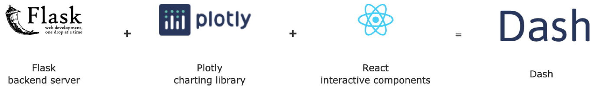
Configuración del entorno#
Para la configuracion de entorno, realicemos los siguientes pasos:
Para crear el entorno virtual usando
Miniconda, puede utilizar la siguiente orden
conda create --name dash_project python=3.9
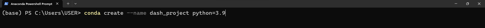
Para activar y/o desactivar el entorno virtual de
Minicondacreado, basta con utilizar las siguientes ordenes. Nótese que no es necesario usar el nombre del entorno virtual para desactivarlo
conda activate dash_project
Instalación de librerias#
Las librarias se instalaran en Anaconda Power Shell, debe activar el ambiente para instalar las librerias
En su terminal, instale
dash.
pip install dash
También recomendamos instalar
Pandas, que es requerido porPlotly Expressy utilizado en muchos de nuestros ejemplos.
pip install pandas
Como tenemos una lista de librerias para instalar, ellas estan escritas en el documento de
requirements.txt. Hagamos el proceso de instalación. Recuerda estar en la carpeta donde esta elrequirements.txt
pip install -r requirements.txt
Diseño de Dash#
Estudiaremos el diseño a través de algunas aplicaciones autónomas.
El diseño de las aplicaciones Dash de producción puede ser estilizado con Dash Enterprise Design Kit. Las aplicaciones Dash se componen de dos partes:
Diseño de la aplicación – describe la estructura y apariencia de la interfaz.
Interactividad de la aplicación – permite la conexión dinámica con los datos y se abordará más adelante.
Dashmantiene un conjunto de componentes fundamentales en las bibliotecas:dash_core_componentsdash_html_components(desdeDash v2.0esto se importa comodash.html)
También puedes crear tus propios componentes usando JavaScript o React.js.
Los ejemplos de código Python pueden guardarse y ejecutarse con el comando:
python app.py
Si deseas trabajar desde un entorno interactivo, puedes usar JupyterDash directamente en Jupyter Notebook, aunque esto no es obligatorio para ejecutar tus aplicaciones en VS Code.
Para empezar, crea un archivo llamado
app.pyen una carpeta llamadaapp_dashusando su editor favorito, copie el código de abajo en él
# Importar librerías necesarias
import dash
from dash import dcc # Componentes interactivos
from dash import html # Componentes HTML
import plotly.express as px # Crear gráficos
import pandas as pd # Manejo de datos
# Crear la aplicación Dash
app = dash.Dash(__name__)
# Crear un DataFrame con datos de ejemplo
df = pd.DataFrame({
"Fruta": ["Manzanas", "Naranjas", "Bananas", "Manzanas", "Naranjas", "Bananas"],
"Cantidad": [4, 1, 2, 2, 4, 5],
"Ciudad": ["San Francisco", "San Francisco", "San Francisco", "Montreal", "Montreal", "Montreal"]
})
# Crear un gráfico de barras agrupadas
fig = px.bar(df, x="Fruta", y="Cantidad", color="Ciudad", barmode="group")
# Definir el diseño de la aplicación
app.layout = html.Div(children=[
html.H1(children='Hola Dash'), # Título principal
html.Div(children='''
Dash: Un framework web para visualizar tus datos.
'''),
# Insertar el gráfico en la aplicación
dcc.Graph(
id='grafico-ejemplo',
figure=fig
)
])
# Ejecutar el servidor
if __name__ == '__main__':
app.run(debug=True) # Recarga automática activada
Desde Anaconda Power Shell corremos la siguiente instrucción
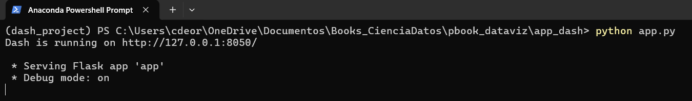
Luego visite http://127.0.0.1:8050/ en su navegador web para ver la aplicación
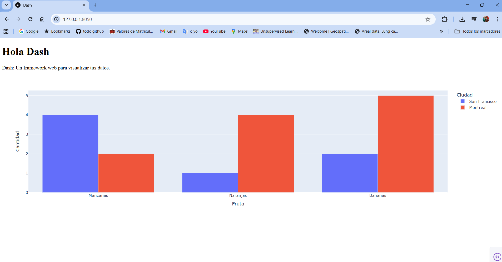
Para personalizar el estilo visual de tu aplicación Dash, puedes elegir entre dos enfoques principales:
Crear tu propia hoja de estilos — por ejemplo, un archivo
style.css, donde definas colores, tipografías, márgenes y demás características de diseño.Utilizar bibliotecas de estilos predefinidas — que puedes importar fácilmente y aplicar directamente, como BootstrapCDN o Plotly Themes.
Si optas por usar estilos predefinidos, debes importar la librería correspondiente en el archivo principal
.pyde tu proyecto. Pero primero instalemos en el ambiente virtualdash_project
pip install dash-bootstrap-components
Ahora, si importemos la libreria
import dash_bootstrap_components as dbc
Una vez importada, puedes seleccionar y aplicar un tema visual al inicializar tu aplicación, lo que te permitirá lograr un diseño profesional y coherente sin necesidad de escribir código CSS desde cero. El codigo nos queda
# Importar librerías necesarias
import dash
from dash import dcc # Componentes interactivos
from dash import html # Componentes HTML
import plotly.express as px # Crear gráficos
import pandas as pd # Manejo de datos
# Definir un tema externo (Bootstrap Darkly)
ext_style = "https://cdn.jsdelivr.net/npm/bootswatch@4.5.2/dist/darkly/bootstrap.min.css"
# Crear la aplicación Dash con el tema externo
app = dash.Dash(external_stylesheets=[ext_style])
# Crear un DataFrame con datos de ejemplo
df = pd.DataFrame({
"Fruta": ["Manzanas", "Naranjas", "Bananas", "Manzanas", "Naranjas", "Bananas"],
"Cantidad": [4, 1, 2, 2, 4, 5],
"Ciudad": ["San Francisco", "San Francisco", "San Francisco", "Montreal", "Montreal", "Montreal"]
})
# Crear un gráfico de barras agrupadas con plantilla oscura
fig = px.bar(df, x="Fruta", y="Cantidad", color="Ciudad", barmode="group", template="plotly_dark")
# Definir el diseño de la aplicación
app.layout = html.Div(children=[
html.H1(children='Hola Dash'), # Título principal
html.Div(children='''
Dash: Un framework web para visualizar tus datos.
'''),
# Insertar el gráfico en la aplicación
dcc.Graph(
id='grafico-ejemplo',
figure=fig
)
])
# Ejecutar el servidor
if __name__ == '__main__':
app.run(debug=True) # Recarga automática activada
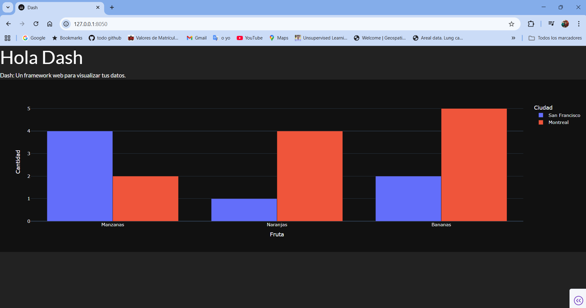
Observación
El diseño de una aplicación en Dash se estructura a partir de un árbol de componentes. Cada elemento de la interfaz (como
html.Divodcc.Graph) representa un bloque dentro de ese árbol.La biblioteca
dash_html_components(o simplementedash.htmldesde Dash v2.0) proporciona un componente para cada etiqueta HTML.
Por ejemplo:
html.H1(children='Hola Dash')crea un encabezado de primer nivel equivalente a<h1>Hola Dash</h1>en HTML.No todos los componentes son elementos HTML puros. Los componentes de
dash_core_componentsrepresentan elementos interactivos de nivel superior y están construidos usando tecnologías como JavaScript, HTML y CSS, a través de la librería React.js.Cada componente se define mediante atributos de palabras clave. Dash es declarativo, lo que significa que la estructura de tu aplicación se describe principalmente indicando qué componentes deben mostrarse y con qué propiedades.
El atributo
childrenes uno de los más importantes. Por convención, siempre aparece primero y puede ser omitido.
Por ejemplo:
html.H1(children='Hola Dash')es equivalente ahtml.H1('Hola Dash').
Este atributo puede contener un texto, un número, un componente o incluso una lista de componentes.Las fuentes y el estilo visual de tu aplicación pueden variar ligeramente dependiendo del tema que utilices. En el ejemplo, se está aplicando un estilo mediante BootstrapCDN y temas de Plotly, lo que permite personalizar la apariencia sin necesidad de escribir código CSS desde cero.
Componentes HTML#
dash_html_components (dash.html a partir de Dash v2.0) contiene una clase de componente para cada etiqueta HTML, así como argumentos de palabras clave para todos los argumentos HTML. Vamos a personalizar el texto de nuestra aplicación modificando los estilos en línea de los componentes. Crea un archivo llamado app.py con el siguiente código
# Importar las librerías necesarias
import dash
from dash import dcc # Componentes interactivos (gráficos, controles, etc.)
from dash import html # Componentes HTML (div, encabezados, párrafos, etc.)
import plotly.express as px # Crear gráficos de forma sencilla
import pandas as pd # Manejo y análisis de datos
# Crear la aplicación Dash
app = dash.Dash(__name__)
# Definir una paleta de colores para el fondo y el texto (tema oscuro)
colors = {
'background': '#111111', # Color de fondo (negro)
'text': '#7FDBFF' # Color del texto (azul claro)
}
# Crear un conjunto de datos de ejemplo en un DataFrame
df = pd.DataFrame({
"Fruta": ["Manzanas", "Naranjas", "Bananas", "Manzanas", "Naranjas", "Bananas"],
"Cantidad": [4, 1, 2, 2, 4, 5],
"Ciudad": ["San Francisco", "San Francisco", "San Francisco", "Montreal", "Montreal", "Montreal"]
})
# Crear un gráfico de barras agrupadas
fig = px.bar(df, x="Fruta", y="Cantidad", color="Ciudad", barmode="group")
# Personalizar el estilo del gráfico
fig.update_layout(
plot_bgcolor=colors['background'], # Fondo del área del gráfico
paper_bgcolor=colors['background'], # Fondo del contenedor del gráfico
font_color=colors['text'] # Color del texto en ejes y títulos
)
# Definir la estructura visual de la aplicación
app.layout = html.Div(
style={'backgroundColor': colors['background']}, # Aplicar el color de fondo global
children=[
# Título principal de la aplicación
html.H1(
children='Hola Dash',
style={
'textAlign': 'center', # Centrar el texto
'color': colors['text'] # Aplicar color personalizado
}
),
# Texto descriptivo debajo del título
html.Div(
children='Dash: Un framework web para visualizar tus datos.',
style={
'textAlign': 'center', # Centrar el texto
'color': colors['text'] # Color del texto
}
),
# Insertar el gráfico dentro de la interfaz
dcc.Graph(
id='grafico-ejemplo-2',
figure=fig
)
]
)
# Ejecutar el servidor local de la aplicación
if __name__ == '__main__':
app.run_server(debug=True) # Activar recarga automática al guardar cambios
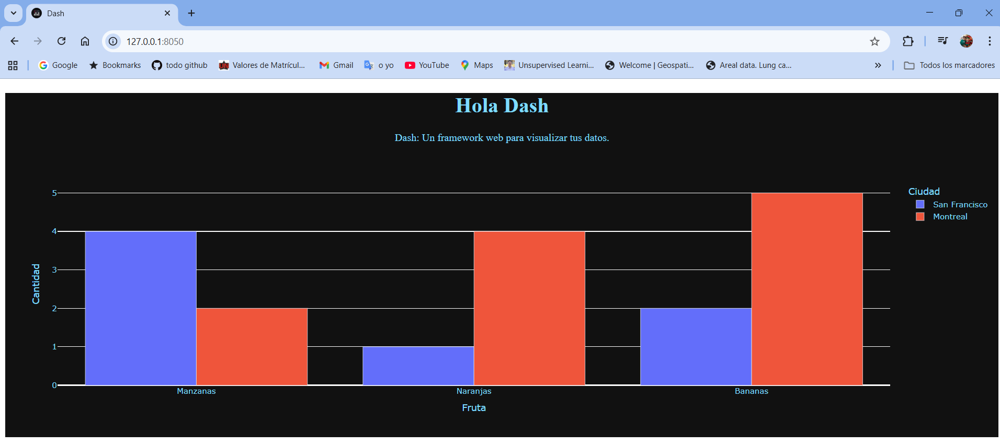
Cambios significativos respecto al código anterior
Paleta de colores personalizada (
colors)Se creó un diccionario
colorspara definir colores de fondo y texto, permitiendo un tema oscuro más estético y fácil de mantener.
colors = {
'background': '#111111', # Color de fondo (negro)
'text': '#7FDBFF' # Color del texto (azul claro)
}
Estilo del gráfico (
fig.update_layout)Ahora se personaliza el fondo del gráfico (
plot_bgcolor) y el fondo del contenedor (paper_bgcolor).También se cambió el color del texto (
font_color).
fig.update_layout(
plot_bgcolor=colors['background'], # Fondo del área del gráfico
paper_bgcolor=colors['background'], # Fondo del contenedor del gráfico
font_color=colors['text'] # Color del texto en ejes y títulos
)
Estilo global de la aplicación (
html.Div)Se aplicó un color de fondo global a toda la interfaz con
style={'backgroundColor': colors['background']}.
Estilo del título y del texto descriptivo (
html.H1yhtml.Div)Se agregó alineación centrada (
textAlign) y color de texto personalizado usando el diccionariocolors.
html.H1(
children='Hola Dash',
style={
'textAlign': 'center', # Centrar el texto
'color': colors['text'] # Aplicar color personalizado
}
)
html.Div(
children='Dash: Un framework web para visualizar tus datos.',
style={
'textAlign': 'center', # Centrar el texto
'color': colors['text'] # Color del texto
}
)
Enfoque en personalización visual
Este código introduce la tematización completa de la interfaz (página y gráfico), mientras que el código anterior mantenía el estilo por defecto de Dash.
Este nuevo código mejora la estética, legibilidad y consistencia visual de la aplicación mediante estilos personalizados tanto en el gráfico como en la interfaz de usuario.
Componentes reutilizables#
Escribiendo nuestro markup en Python, podemos crear componentes complejos reutilizables como tablas sin cambiar de contexto o de lenguaje. Aquí hay un ejemplo rápido que genera una tabla Table a partir de un dataframe de Pandas (ver html.Tr, html.Td, html.Thead ). Crea un archivo llamado app.py con el siguiente código
# Importar librerías necesarias
import dash
from dash import html # Componentes HTML
import pandas as pd # Manejo de datos con DataFrames
# Leer el archivo CSV directamente desde GitHub
df = pd.read_csv("https://raw.githubusercontent.com/cdeoroaguado/Datos/refs/heads/main/dataviz/usa-agricultural-exports-2011.csv")
# Función para generar una tabla HTML a partir de un DataFrame
def generate_table(dataframe, max_rows=10):
return html.Table([
# Encabezado de la tabla
html.Thead(
html.Tr([html.Th(col) for col in dataframe.columns])
),
# Cuerpo de la tabla con filas y columnas
html.Tbody([
html.Tr([
html.Td(dataframe.iloc[i][col]) for col in dataframe.columns
]) for i in range(min(len(dataframe), max_rows))
])
])
# Crear la aplicación Dash
app = dash.Dash(__name__)
# Definir el diseño de la aplicación
app.layout = html.Div([
html.H4(children='Exportaciones agrícolas de EE.UU. (2011)'), # Título de la app
generate_table(df) # Llamar a la función que genera la tabla
])
# Ejecutar el servidor local
if __name__ == '__main__':
app.run(debug=True) # Recarga automática activada
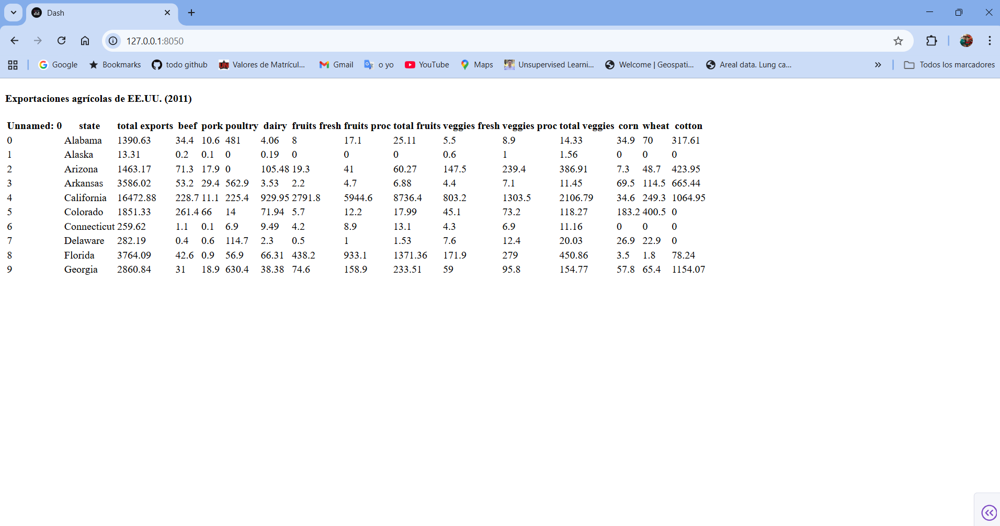
Visualizaciones#
La biblioteca
dash_core_componentsincluye un componente llamadoGraph, el cual permite crear visualizaciones de datos interactivas directamente desde tus aplicaciones Dash. Este componente se basa en la librería de gráficos de código abierto Plotly.js, que admite más de 35 tipos de gráficos diferentes y ofrece soporte tanto para representaciones vectoriales en SVG como para renderizados de alto rendimiento en WebGL.El argumento
figuredel componenteGraphutiliza el mismo formato que emplea la librería plotly.py, el módulo de visualización en Python de Plotly. Esto facilita la integración de gráficos creados con Plotly directamente en tus aplicaciones Dash, permitiendo aprovechar todo su potencial interactivo sin cambios adicionales en el código.Para profundizar en sus capacidades, consulta la documentación oficial de Plotly.py y explora su galería de ejemplos. A continuación, se presenta un ejemplo que genera un gráfico de dispersión a partir de un conjunto de datos de Pandas. Para probarlo, crea un archivo llamado
app.pyy añade el siguiente código:
# Importar las librerías necesarias
import dash
from dash import dcc # Componentes interactivos (gráficos, sliders, etc.)
from dash import html # Componentes HTML (div, encabezados, etc.)
import plotly.express as px # Para crear gráficos fácilmente
import pandas as pd # Manejo de datos en DataFrames
# Crear la aplicación Dash
app = dash.Dash(__name__)
# Leer el conjunto de datos desde GitHub
df = pd.read_csv("https://raw.githubusercontent.com/cdeoroaguado/Datos/refs/heads/main/dataviz/gdp-life-exp-2007.csv")
# Crear un gráfico de dispersión (relación entre PIB per cápita y esperanza de vida)
fig = px.scatter(
df,
x="gdp per capita", # Eje X: PIB per cápita
y="life expectancy", # Eje Y: Esperanza de vida
size="population", # Tamaño del punto: población
color="continent", # Color: continente
hover_name="country", # Texto al pasar el cursor: nombre del país
log_x=True, # Escala logarítmica en el eje X
size_max=60 # Tamaño máximo de los puntos
)
# Definir el diseño de la aplicación
app.layout = html.Div([
# Mostrar el gráfico dentro de la aplicación
dcc.Graph(
id='life-exp-vs-gdp', # ID del gráfico
figure=fig # Figura creada con Plotly
)
])
# Ejecutar el servidor de la aplicación
if __name__ == '__main__':
app.run(debug=True) # Activar recarga automática al guardar cambios
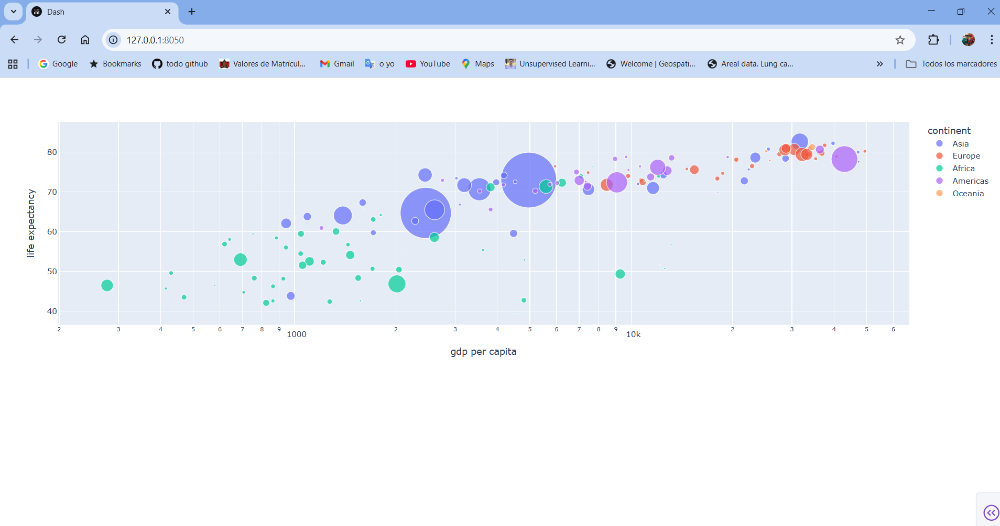
Uso de Markdown en Dash#
Aunque Dash permite escribir contenido en formato HTML utilizando el módulo
dash_html_components(o simplementedash.htmldesde Dash v2.0), esta opción puede resultar tediosa cuando necesitas añadir mucho texto o documentación dentro de tu aplicación.Para facilitar esta tarea, puedes emplear el componente
Markdowndisponible endash_core_components. Este componente te permite escribir bloques de texto con formato Markdown directamente en tu aplicación, lo que hace que el código sea más limpio, legible y fácil de mantener.A continuación, puedes crear un archivo llamado
app.pycon un ejemplo práctico del uso deMarkdownen Dash:
# Importar las librerías necesarias
import dash
from dash import dcc # Componentes interactivos (Markdown, gráficos, etc.)
from dash import html # Componentes HTML (div, encabezados, párrafos, etc.)
# Crear la aplicación Dash
app = dash.Dash(__name__)
# Texto en formato Markdown (bloque de texto con formato)
markdown_text = '''
## Dash y Markdown
- Las aplicaciones creadas con Dash pueden incluir texto en formato **Markdown**.
- Dash utiliza la especificación [CommonMark](http://commonmark.org/) para procesar Markdown.
- Si es tu primera vez usando este formato, revisa el [Tutorial de Markdown en 60 segundos](http://commonmark.org/help/).
'''
# Definir el diseño de la aplicación
app.layout = html.Div([
# Agregar el bloque de texto en formato Markdown a la app
dcc.Markdown(children=markdown_text)
])
# Ejecutar el servidor local
if __name__ == '__main__':
app.run(debug=True) # Recarga automática al guardar cambios
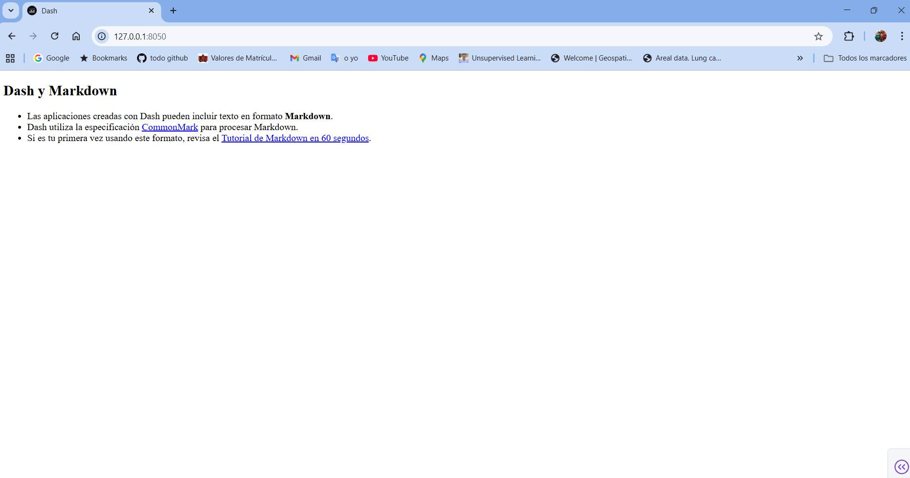
Componentes principales en Dash#
El módulo
dash_core_componentsproporciona un conjunto completo de componentes de alto nivel que permiten construir interfaces interactivas, incluyendo desplegables, gráficos, controles deslizantes, bloques de texto en Markdown, entre otros.Al igual que todos los elementos en Dash, estos componentes se definen de manera totalmente declarativa. Cada uno de sus parámetros se configura a través de argumentos de palabra clave, lo que facilita su personalización y reutilización en diferentes partes de la aplicación.
A lo largo de esta sección, exploraremos muchos de estos componentes en acción. Si deseas conocer el listado completo, consulta la Galería oficial de componentes del núcleo de Dash.
A continuación se muestran algunos de los componentes más utilizados. Para probarlos, crea un archivo llamado
app.pye incluye el siguiente código de ejemplo:
# Importar librerías necesarias
import dash
from dash import dcc # Componentes interactivos
from dash import html # Componentes HTML
# Crear la aplicación Dash
app = dash.Dash(__name__)
# Definir el diseño de la aplicación
app.layout = html.Div([
# --- Dropdown simple ---
html.Label('Dropdown'),
dcc.Dropdown(
options=[
{'label': 'New York City', 'value': 'NYC'},
{'label': 'Montréal', 'value': 'MTL'},
{'label': 'San Francisco', 'value': 'SF'}
],
value='MTL'
),
html.Br(), # Salto de línea para separación
# --- Dropdown múltiple ---
html.Label('Multi-Select Dropdown'),
dcc.Dropdown(
options=[
{'label': 'New York City', 'value': 'NYC'},
{'label': 'Montréal', 'value': 'MTL'},
{'label': 'San Francisco', 'value': 'SF'}
],
value=['MTL', 'SF'], # Selección múltiple por defecto
multi=True
),
html.Br(),
# --- Botones de opción (RadioItems) ---
html.Label('Radio Items'),
dcc.RadioItems(
options=[
{'label': 'New York City', 'value': 'NYC'},
{'label': 'Montréal', 'value': 'MTL'},
{'label': 'San Francisco', 'value': 'SF'}
],
value='MTL' # Valor seleccionado por defecto
),
html.Br(),
# --- Casillas de verificación (Checklists) ---
html.Label('Checkboxes'),
dcc.Checklist(
options=[
{'label': 'New York City', 'value': 'NYC'},
{'label': 'Montréal', 'value': 'MTL'},
{'label': 'San Francisco', 'value': 'SF'}
],
value=['MTL', 'SF'] # Valores seleccionados por defecto
),
html.Br(),
# --- Campo de entrada de texto ---
html.Label('Text Input'),
dcc.Input(
value='MTL', # Valor por defecto
type='text' # Tipo de entrada: texto
),
html.Br(),
html.Br(),
# --- Control deslizante (Slider) ---
html.Label('Slider'),
dcc.Slider(
min=0, # Valor mínimo
max=9, # Valor máximo
marks={i: 'Label {}'.format(i) if i == 1 else str(i) for i in range(1, 6)}, # Etiquetas
value=5, # Valor inicial
),
], style={
'columnCount': 2, # Dividir en 2 columnas
'padding': '20px', # Espaciado interno general
'font-family': 'Arial, sans-serif',
'margin': '20px' # Separación del borde de la ventana
})
# Ejecutar el servidor local
if __name__ == '__main__':
app.run(debug=True) # Activar recarga automática
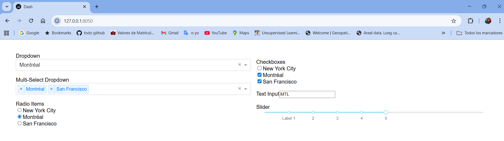
Resumen
El diseño de una aplicación en Dash define su estructura visual y organizacional. Este diseño se compone de un árbol jerárquico de componentes, en el que cada elemento tiene una función específica dentro de la interfaz.
La biblioteca
dash_html_components(odash.htmla partir de Dash v2.0) proporciona clases para todas las etiquetas HTML, permitiendo construir la estructura de la aplicación con gran flexibilidad.
Los argumentos de palabras clave en cada componente permiten definir atributos comostyle,classoid, esenciales para personalizar el comportamiento y la apariencia de cada elemento.Por su parte, la biblioteca
dash_core_componentsofrece componentes de nivel superior, como gráficos, menús desplegables, controles interactivos y otros elementos dinámicos que enriquecen la interfaz del usuario.Para explorar en detalle todos los componentes disponibles, consulta las siguientes referencias oficiales:
Callbacks básicos en Dash#
Como se ha visto anteriormente,
app.layoutdefine la estructura y el diseño de la aplicación como un árbol jerárquico de componentes.La biblioteca
dash_html_components(odash.htmla partir de Dash v2.0) proporciona clases para todas las etiquetas HTML, cuyos atributos (comostyle,classNameoid) se pueden definir mediante argumentos de palabras clave.Por su parte,
dash_core_componentsofrece componentes de alto nivel, como gráficos, controles interactivos y otros elementos dinámicos.
Introducción a los Callbacks#
Los callbacks permiten que una aplicación de Dash sea interactiva. Son funciones que se ejecutan automáticamente cada vez que la propiedad de un componente de entrada cambia, actualizando así otro componente de salida.
En otras palabras, un callback conecta componentes de entrada (como campos de texto, sliders o menús desplegables) con componentes de salida (como gráficos, tablas o texto en pantalla).
Observaciones importantes#
1. Entradas y salidas (inputs y outputs)#
Las propiedades
inputsyoutputsde la aplicación se definen como argumentos del decorador@app.callback.Al utilizar este decorador, indicamos a Dash que ejecute la función cada vez que cambie el valor de un componente de entrada (por ejemplo, un campo de texto) para actualizar la propiedad
childrende un componente de salida (por ejemplo, undivHTML).
@app.callback(Output('output-div', 'children'), Input('input-text', 'value'))
def actualizar_salida(valor):
return f"Has escrito: {valor}"
2. Nombres de funciones y argumentos#
Puedes utilizar cualquier nombre para la función asociada al decorador
@app.callback. Por convención, se recomienda que el nombre esté relacionado con la salida del callback.Los nombres de los argumentos dentro de la función deben coincidir con el orden de los elementos de entrada definidos en el decorador.
Puedes usar argumentos posicionales o palabras clave, pero es más claro usar nombres descriptivos.
3. Identificadores (id) y coincidencias#
El valor de
idutilizado en un componente dentro delapp.layoutdebe coincidir exactamente con elidreferenciado en el decorador@app.callback.Si hay alguna discrepancia, el callback no se ejecutará.
4. Ubicación del decorador#
El decorador
@app.callbackdebe ubicarse inmediatamente encima de la definición de la función.Si hay líneas en blanco u otros elementos entre el decorador y la función, el registro del callback fallará.
Funcionamiento interno de los Callbacks#
En Dash, los
inputsyoutputsson simplemente propiedades de un componente.Por ejemplo, si tenemos un campo de texto con el
id="my-input"y queremos actualizar undivcon elid="my-output", podemos conectar ambas propiedades a través de un callback que utilicevaluecomo entrada ychildrencomo salida.Cada vez que cambia un valor de entrada, la función definida en el decorador
@app.callbackse ejecuta automáticamente.Dash proporciona el nuevo valor de entrada como argumento de la función y actualiza automáticamente la propiedad del componente de salida.
Buenas prácticas y recomendaciones#
Las palabras clave
component_idycomponent_propertyson opcionales, pero se pueden incluir para mayor claridad en el código.No confundas
dash.dependencies.Inputcondcc.Input. El primero se usa para definir la entrada en el callback; el segundo es un componente real de entrada.No es necesario establecer un valor inicial para la propiedad children de un componente. Cuando la aplicación se inicia, Dash ejecuta automáticamente todos los callbacks con los valores iniciales de sus entradas.
html.Div(id='my-output', children='Hola mundo')
Interactividad dinámica#
La verdadera potencia de Dash radica en su capacidad para actualizar dinámicamente cualquier propiedad de un componente a través de un callback.
Por ejemplo:
Cambiar el texto (
children) de un componente al escribir en un campo de entrada.Actualizar un gráfico (
dcc.Graph) con nuevos datos en tiempo real.Modificar el estilo, las opciones disponibles o el comportamiento de un componente como
dcc.Dropdownodcc.Slider.
En resumen, los callbacks son el corazón de la interactividad en Dash. Gracias a ellos, puedes conectar componentes, actualizar valores en tiempo real y crear aplicaciones web de análisis de datos potentes, dinámicas e interactivas.
# Importar las librerías necesarias
import dash
from dash import dcc, html # Componentes interactivos y HTML
from dash.dependencies import Input, Output # Para callbacks (entradas y salidas)
# Crear la aplicación Dash
app = dash.Dash(__name__)
# Definir el diseño de la aplicación
app.layout = html.Div([
# Título o descripción principal
html.H6("Cambia el valor en el cuadro de texto para ver el callback en acción!"),
# Campo de entrada de texto
html.Div([
"Entrada: ",
dcc.Input(
id='my-input', # ID del componente (referencia en el callback)
value='valor inicial', # Valor predeterminado
type='text' # Tipo de entrada (texto)
)
]),
html.Br(), # Salto de línea para separar elementos visualmente
# Div que mostrará el resultado del callback
html.Div(id='my-output'),
])
# Callback: conecta el valor del input con el contenido del div de salida
@app.callback(
Output(component_id='my-output', component_property='children'), # Salida
Input(component_id='my-input', component_property='value') # Entrada
)
def update_output_div(input_value):
"""
Función que se ejecuta automáticamente cada vez que cambia el valor del input.
Retorna el texto actualizado que se mostrará en la salida.
"""
return f'Salida: {input_value}'
# Ejecutar el servidor
if __name__ == '__main__':
app.run(debug=True) # 'debug=True' permite recargar automáticamente al guardar cambios
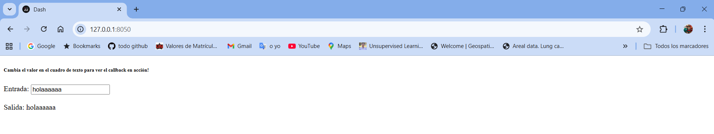
Diseño de Aplicación Dash con Gráfico Interactivo y Slider#
Veamos el siguiente conjunto de datos
import pandas as pd
df = pd.read_csv('https://raw.githubusercontent.com/cdeoroaguado/Datos/refs/heads/main/dataviz/gapminderDataFiveYear.csv')
df.head()
| country | year | pop | continent | lifeExp | gdpPercap | |
|---|---|---|---|---|---|---|
| 0 | Afghanistan | 1952 | 8425333.0 | Asia | 28.801 | 779.445314 |
| 1 | Afghanistan | 1957 | 9240934.0 | Asia | 30.332 | 820.853030 |
| 2 | Afghanistan | 1962 | 10267083.0 | Asia | 31.997 | 853.100710 |
| 3 | Afghanistan | 1967 | 11537966.0 | Asia | 34.020 | 836.197138 |
| 4 | Afghanistan | 1972 | 13079460.0 | Asia | 36.088 | 739.981106 |
Hagamos el dash de la visualización con slider
# Importar las librerías necesarias
import dash
from dash import dcc # Componentes interactivos (gráficos, sliders, etc.)
from dash import html # Componentes HTML (div, encabezados, etc.)
from dash.dependencies import Input, Output # Para callbacks (entradas y salidas)
import plotly.express as px # Visualización de datos interactiva
import pandas as pd # Manejo de datos con DataFrames
# Leer el conjunto de datos desde GitHub
df = pd.read_csv('https://raw.githubusercontent.com/cdeoroaguado/Datos/refs/heads/main/dataviz/gapminderDataFiveYear.csv')
# Crear la aplicación Dash
app = dash.Dash(__name__)
# Definir el diseño de la aplicación
app.layout = html.Div([
# Gráfico que se actualizará con el slider
dcc.Graph(id='graph-with-slider'),
# Slider para seleccionar el año
dcc.Slider(
id='year-slider', # ID del slider
min=df['year'].min(), # Año mínimo
max=df['year'].max(), # Año máximo
value=df['year'].min(), # Valor inicial
marks={str(year): str(year) for year in df['year'].unique()}, # Etiquetas
step=None # Sin pasos intermedios
)
])
# Callback: conecta el valor del slider con la figura
@app.callback(
Output('graph-with-slider', 'figure'), # Salida: figura del gráfico
Input('year-slider', 'value') # Entrada: valor del slider
)
def update_figure(selected_year):
# Filtrar datos según el año seleccionado
filtered_df = df[df.year == selected_year]
# Crear gráfico de dispersión
fig = px.scatter(
filtered_df,
x="gdpPercap", # Eje X: PIB per cápita
y="lifeExp", # Eje Y: esperanza de vida
size="pop", # Tamaño: población
color="continent", # Color: continente
hover_name="country", # Tooltip: país
log_x=True, # Escala logarítmica en X
size_max=55 # Tamaño máximo de los puntos
)
# Animación suave en la transición al cambiar de año
fig.update_layout(transition_duration=500)
return fig # Retornar la figura actualizada
# Ejecutar el servidor local
if __name__ == '__main__':
app.run(debug=True) # Recarga automática al guardar cambios
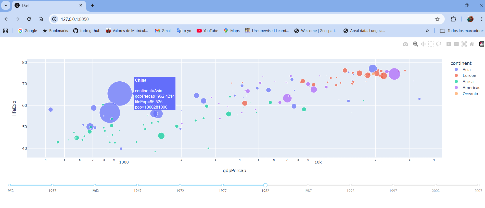
Recuerde que siempre puede cambiar el estilo de su figura y la hoja. Sólo debe cambiar las siguientes lineas
# Importar las librerías necesarias
import dash
from dash import dcc # Componentes interactivos (gráficos, sliders, etc.)
from dash import html # Componentes HTML (div, encabezados, etc.)
from dash.dependencies import Input, Output # Para callbacks
import plotly.express as px # Gráficos interactivos
import pandas as pd # Manejo de datos
# Leer el conjunto de datos desde GitHub
df = pd.read_csv('https://raw.githubusercontent.com/cdeoroaguado/Datos/refs/heads/main/dataviz/gapminderDataFiveYear.csv')
# Aplicar un tema externo de Bootstrap (Slate) para mejorar el diseño visual
ext_style = "https://cdn.jsdelivr.net/npm/bootswatch@4.5.2/dist/slate/bootstrap.min.css"
app = dash.Dash(external_stylesheets=[ext_style]) # Cargar el tema en la app
# Definir el diseño de la aplicación
app.layout = html.Div([
# Gráfico interactivo que se actualizará con el slider
dcc.Graph(id='graph-with-slider'),
# Slider para seleccionar el año
dcc.Slider(
id='year-slider', # ID del slider
min=df['year'].min(), # Año mínimo
max=df['year'].max(), # Año máximo
value=df['year'].min(), # Valor inicial
marks={str(year): str(year) for year in df['year'].unique()}, # Etiquetas
step=None # Sin pasos intermedios
)
])
# Callback: actualiza la figura cada vez que se cambia el valor del slider
@app.callback(
Output('graph-with-slider', 'figure'), # Salida: figura del gráfico
Input('year-slider', 'value') # Entrada: valor del slider
)
def update_figure(selected_year):
# Filtrar datos según el año seleccionado
filtered_df = df[df.year == selected_year]
# Crear gráfico de dispersión con tema oscuro
fig = px.scatter(
filtered_df,
x="gdpPercap", # Eje X: PIB per cápita
y="lifeExp", # Eje Y: esperanza de vida
size="pop", # Tamaño de los puntos: población
color="continent", # Color: continente
hover_name="country", # Tooltip: nombre del país
log_x=True, # Escala logarítmica logarítmica en X
size_max=55, # Tamaño máximo de los puntos
template="plotly_dark" # Aplicar plantilla oscura al gráfico
)
# Animación suave al cambiar el año
fig.update_layout(transition_duration=500)
return fig # Retornar la figura actualizada
# Ejecutar el servidor local
if __name__ == '__main__':
app.run(debug=True) # Activar recarga automática
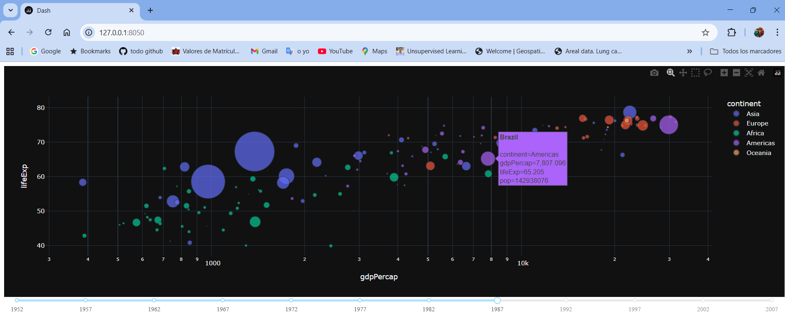
Aplicación Dash con múltiples entradas#
En Dash, cualquier
Outputpuede estar asociado a múltiples componentes de entrada (Input).Esto permite que un mismo elemento de salida reaccione simultáneamente a varios eventos o cambios en la interfaz.
Por ejemplo, se puede conectar cinco componentes de entrada —dos dcc.Dropdown, dos dcc.RadioItems y un dcc.Slider— a un único componente de salida Output (como la propiedad figure de un dcc.Graph).
El decorador @app.callback se encarga de gestionar esta relación, enumerando todos los elementos de entrada después de la salida. De esta forma, cualquier cambio en uno de los cinco componentes actualizará automáticamente el gráfico.
df = pd.read_csv('https://raw.githubusercontent.com/cdeoroaguado/Datos/refs/heads/main/dataviz/country_indicators.csv')
df.head()
| Country Name | Indicator Name | Year | Value | |
|---|---|---|---|---|
| 0 | Arab World | Agriculture, value added (% of GDP) | 1962 | NaN |
| 1 | Arab World | CO2 emissions (metric tons per capita) | 1962 | 0.760996 |
| 2 | Arab World | Domestic credit provided by financial sector (... | 1962 | 18.168690 |
| 3 | Arab World | Electric power consumption (kWh per capita) | 1962 | NaN |
| 4 | Arab World | Energy use (kg of oil equivalent per capita) | 1962 | NaN |
# Importar las librerías necesarias
import dash
from dash import dcc, html # Componentes interactivos y estructura HTML
from dash.dependencies import Input, Output # Para definir las entradas y salidas de callbacks
import plotly.express as px # Para crear gráficos interactivos
import pandas as pd # Manejo de datos
# Crear la aplicación Dash
app = dash.Dash(__name__)
# Leer el conjunto de datos desde GitHub
df = pd.read_csv('https://raw.githubusercontent.com/cdeoroaguado/Datos/refs/heads/main/dataviz/country_indicators.csv')
# Obtener la lista de indicadores disponibles
available_indicators = df['Indicator Name'].unique()
# Definir el diseño de la aplicación
app.layout = html.Div([
# Contenedor de controles para eje X y eje Y
html.Div([
# Controles para el eje X
html.Div([
dcc.Dropdown(
id='xaxis-column', # Dropdown para seleccionar indicador del eje X
options=[{'label': i, 'value': i} for i in available_indicators],
value='Fertility rate, total (births per woman)' # Valor inicial
),
dcc.RadioItems(
id='xaxis-type', # Tipo de escala del eje X
options=[{'label': i, 'value': i} for i in ['Linear', 'Log']],
value='Linear', # Escala inicial
labelStyle={'display': 'inline-block'}
)
], style={'width': '48%', 'display': 'inline-block'}),
# Controles para el eje Y
html.Div([
dcc.Dropdown(
id='yaxis-column', # Dropdown para seleccionar indicador del eje Y
options=[{'label': i, 'value': i} for i in available_indicators],
value='Life expectancy at birth, total (years)' # Valor inicial
),
dcc.RadioItems(
id='yaxis-type', # Tipo de escala del eje Y
options=[{'label': i, 'value': i} for i in ['Linear', 'Log']],
value='Linear', # Escala inicial
labelStyle={'display': 'inline-block'}
)
], style={'width': '48%', 'float': 'right', 'display': 'inline-block'})
]),
# Gráfico de dispersión interactivo
dcc.Graph(id='indicator-graphic'),
# Slider para seleccionar el año
dcc.Slider(
id='year--slider', # ID del slider
min=df['Year'].min(), # Año mínimo
max=df['Year'].max(), # Año máximo
value=df['Year'].max(), # Año inicial mostrado
marks={str(year): str(year) for year in df['Year'].unique()}, # Etiquetas en el slider
step=None # Sin pasos intermedios
)
])
# Callback: conecta los controles con el gráfico
@app.callback(
Output('indicator-graphic', 'figure'), # Salida: figura del gráfico
Input('xaxis-column', 'value'), # Entrada: indicador eje X
Input('yaxis-column', 'value'), # Entrada: indicador eje Y
Input('xaxis-type', 'value'), # Entrada: escala eje X
Input('yaxis-type', 'value'), # Entrada: escala eje Y
Input('year--slider', 'value') # Entrada: año seleccionado
)
def update_graph(xaxis_column_name, yaxis_column_name,
xaxis_type, yaxis_type,
year_value):
# Filtrar el DataFrame según el año seleccionado
dff = df[df['Year'] == year_value]
# Crear gráfico de dispersión con indicadores seleccionados
fig = px.scatter(
x=dff[dff['Indicator Name'] == xaxis_column_name]['Value'], # Eje X
y=dff[dff['Indicator Name'] == yaxis_column_name]['Value'], # Eje Y
hover_name=dff[dff['Indicator Name'] == yaxis_column_name]['Country Name'] # País al pasar el cursor
)
# Configuración del diseño del gráfico
fig.update_layout(
margin={'l': 40, 'b': 40, 't': 10, 'r': 0}, # Márgenes
hovermode='closest' # Mostrar el punto más cercano al cursor
)
# Configurar tipo de escala del eje X
fig.update_xaxes(
title=xaxis_column_name,
type='linear' if xaxis_type == 'Linear' else 'log'
)
# Configurar tipo de escala del eje Y
fig.update_yaxes(
title=yaxis_column_name,
type='linear' if yaxis_type == 'Linear' else 'log'
)
return fig # Devolver la figura actualizada
# Ejecutar el servidor
if __name__ == '__main__':
app.run(debug=True) # Recarga automática al guardar cambios
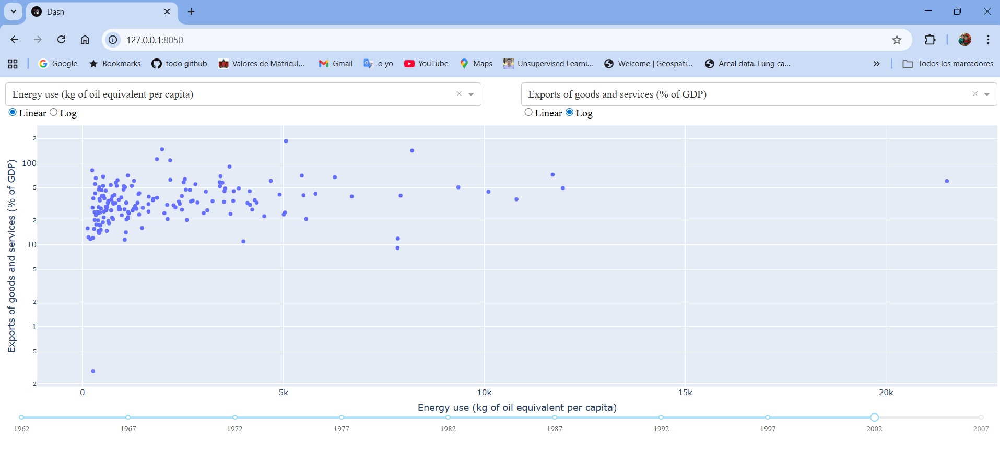
En este ejemplo, la función callback se ejecuta automáticamente cada vez que cambia la propiedad
valuede cualquiera de los componentesdcc.Dropdown,dcc.Sliderodcc.RadioItems.
Los valores que recibe la función corresponden al estado más reciente de cada una de las propiedades de entrada, en el mismo orden en que fueron definidas.Aunque en un momento dado solo un
Inputpuede cambiar (por ejemplo, cuando un usuario modifica el valor de un únicoDropdown), Dash recopila el estado actual de todas las propiedadesInputespecificadas y las pasa a la función callback.
Esto garantiza que la función siempre trabaje con un estado actualizado y representativo de toda la aplicación, incluso si uno solo de los componentes fue modificado.
Aplicación Dash con múltiples salidas#
Hasta ahora todos los callbacks que hemos escrito sólo actualizan una propiedad de salida. También podemos actualizar varias a la vez. Puede enumerar todas las propiedades que requiera actualizar en app.callback, y devolver ese número de elementos desde el callback. Esto es particularmente bueno si dos salidas dependen del mismo resultado intermedio computacionalmente intenso, como una consulta lenta a la base de datos.
# Importar librerías necesarias
import dash
from dash import dcc, html # Componentes interactivos y HTML
from dash.dependencies import Input, Output # Para entradas y salidas de callbacks
# Agregar hoja de estilos externa (mejora el diseño visual)
external_stylesheets = ['https://codepen.io/chriddyp/pen/bWLwgP.css']
# Crear la aplicación Dash
app = dash.Dash(__name__, external_stylesheets=external_stylesheets)
# Definir el diseño de la aplicación
app.layout = html.Div([
# Campo de entrada numérica
dcc.Input(
id='num-multi', # ID para usar en el callback
type='number', # Tipo de entrada: número
value=5 # Valor inicial
),
# Crear una tabla para mostrar los resultados de las potencias
html.Table([
html.Tr([html.Td(['x', html.Sup(2)]), html.Td(id='square')]), # x²
html.Tr([html.Td(['x', html.Sup(3)]), html.Td(id='cube')]), # x³
html.Tr([html.Td([2, html.Sup('x')]), html.Td(id='twos')]), # 2^x
html.Tr([html.Td([3, html.Sup('x')]), html.Td(id='threes')]), # 3^x
html.Tr([html.Td(['x', html.Sup('x')]), html.Td(id='x^x')]), # x^x
]),
])
# Callback: se ejecuta cada vez que cambia el valor en el input
@app.callback(
Output('square', 'children'), # Resultado x²
Output('cube', 'children'), # Resultado x³
Output('twos', 'children'), # Resultado 2^x
Output('threes', 'children'), # Resultado 3^x
Output('x^x', 'children'), # Resultado x^x
Input('num-multi', 'value') # Entrada: valor ingresado
)
def callback_a(x):
# Verificar si el valor ingresado es None (cuando el campo está vacío)
if x is None:
return "—", "—", "—", "—", "—" # Mostrar guiones en lugar de errores
# Calcular los valores si x es un número
return x**2, x**3, 2**x, 3**x, x**x
# Ejecutar el servidor local
if __name__ == '__main__':
app.run(debug=True) # Modo debug activado (recarga automática)
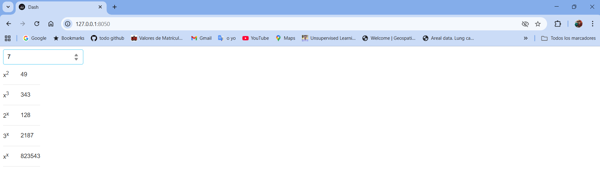
Dash App con callbacks encadenados#
También puedes encadenar salidas y entradas. La salida de una función callback puede ser la entrada de otra función callback. Este patrón puede ser utilizado para crear UIs dinámicas donde un componente de entrada actualiza las opciones disponibles del siguiente componente de entrada
# Importar librerías necesarias
import dash
from dash import dcc, html # Componentes interactivos y elementos HTML
from dash.dependencies import Input, Output # Para crear callbacks
# Hoja de estilos externa (mejor apariencia)
external_stylesheets = ['https://codepen.io/chriddyp/pen/bWLwgP.css']
# Crear la aplicación Dash
app = dash.Dash(__name__, external_stylesheets=external_stylesheets)
# Diccionario con países y sus ciudades correspondientes
all_options = {
'America': ['New York City', 'San Francisco', 'Cincinnati'],
'Canada': [u'Montréal', 'Toronto', 'Ottawa']
}
# Definir el diseño de la aplicación
app.layout = html.Div([
# Selección de país (RadioItems)
dcc.RadioItems(
id='countries-radio', # ID del selector de países
options=[{'label': k, 'value': k} for k in all_options.keys()], # Lista de países
value='America' # Valor por defecto
),
html.Hr(), # Línea divisoria
# Selección de ciudad (se actualizará según el país seleccionado)
dcc.RadioItems(id='cities-radio'),
html.Hr(),
# Div para mostrar la selección final
html.Div(id='display-selected-values')
])
# Callback 1: Actualizar las opciones de ciudades cuando cambia el país
@app.callback(
Output('cities-radio', 'options'), # Salida: lista de opciones en ciudades
Input('countries-radio', 'value') # Entrada: país seleccionado
)
def set_cities_options(selected_country):
# Retorna la lista de ciudades disponibles para el país seleccionado
return [{'label': i, 'value': i} for i in all_options[selected_country]]
# Callback 2: Establecer un valor por defecto en el selector de ciudades
@app.callback(
Output('cities-radio', 'value'), # Salida: valor seleccionado en ciudades
Input('cities-radio', 'options') # Entrada: lista de opciones de ciudades
)
def set_cities_value(available_options):
# Retorna el primer valor de la lista de ciudades como valor por defecto
return available_options[0]['value']
# Callback 3: Mostrar el resultado final con la ciudad y el país seleccionados
@app.callback(
Output('display-selected-values', 'children'), # Salida: texto mostrado
Input('countries-radio', 'value'), # Entrada: país seleccionado
Input('cities-radio', 'value') # Entrada: ciudad seleccionada
)
def set_display_children(selected_country, selected_city):
# Retorna un texto con la ciudad y el país seleccionados
return u'{} is a city in {}'.format(selected_city, selected_country)
# Ejecutar el servidor local
if __name__ == '__main__':
app.run(debug=True) # Activar modo debug (recarga automática)
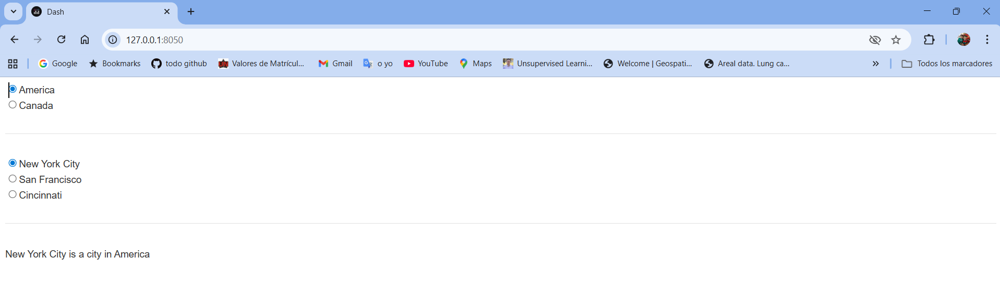
Dash App con estado#
En algunos casos, puede tener un patrón de tipo “formulario” en su aplicación. En esta situación, es posible que quieras leer el valor del componente de entrada, pero sólo cuando el usuario haya terminado de introducir toda su información en el formulario Adjuntar una llamada de retorno a los valores de entrada directamente puede tener este aspecto:
# Importar las librerías necesarias
import dash
from dash import dcc, html # Componentes interactivos y elementos HTML
from dash.dependencies import Input, Output # Para definir entradas y salidas de callbacks
# Hoja de estilos externa para mejorar la apariencia
external_stylesheets = ["https://codepen.io/chriddyp/pen/bWLwgP.css"]
# Crear la aplicación Dash
app = dash.Dash(__name__, external_stylesheets=external_stylesheets)
# Definir el diseño de la aplicación
app.layout = html.Div([
# Primer campo de entrada de texto
dcc.Input(
id="input-1", # ID del primer input
type="text", # Tipo de entrada: texto
value="Montréal" # Valor inicial
),
# Segundo campo de entrada de texto
dcc.Input(
id="input-2", # ID del segundo input
type="text", # Tipo de entrada: texto
value="Canada" # Valor inicial
),
# Div para mostrar el resultado de la concatenación de los dos inputs
html.Div(id="number-output"),
])
# Callback: se ejecuta automáticamente cuando cambian los valores de los dos inputs
@app.callback(
Output("number-output", "children"), # Salida: texto dentro del Div
Input("input-1", "value"), # Entrada: valor del primer input
Input("input-2", "value") # Entrada: valor del segundo input
)
def update_output(input1, input2):
"""
Esta función se ejecuta cada vez que cambia el valor de cualquiera
de los dos campos de entrada. Recibe los valores actualizados y
devuelve un texto concatenado que se mostrará en el Div.
"""
return u'Input 1 is "{}" and Input 2 is "{}"'.format(input1, input2)
# Ejecutar el servidor local
if __name__ == "__main__":
app.run(debug=True) # Activar modo debug (recarga automática al guardar cambios)
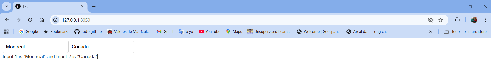
En este ejemplo, la función callback se dispara cada vez que cambia alguno de los atributos descritos por la entrada Input. Pruébelo usted mismo introduciendo datos en las entradas anteriores. El estado le permite pasar valores adicionales sin disparar las devoluciones de llamada. Aquí está el mismo ejemplo anterior pero con el dcc.Input como State y un botón como Input. Recuerde que, la letra "u" delante de los valores del string significa que la cadena es Unicode.
Actualizar gráficos al deslizar el cursor#
Actualicemos nuestro ejemplo de indicadores mundiales, actualizando las series de tiempo cuando pasamos por encima de los puntos de nuestro gráfico de dispersión. la opción padding en el dash es utilizada para configurar el área de relleno en los cuatro lados de un elemento a la vez (ver padding).
df = pd.read_csv('https://raw.githubusercontent.com/cdeoroaguado/Datos/refs/heads/main/dataviz/country_indicators.csv')
df.head()
| Country Name | Indicator Name | Year | Value | |
|---|---|---|---|---|
| 0 | Arab World | Agriculture, value added (% of GDP) | 1962 | NaN |
| 1 | Arab World | CO2 emissions (metric tons per capita) | 1962 | 0.760996 |
| 2 | Arab World | Domestic credit provided by financial sector (... | 1962 | 18.168690 |
| 3 | Arab World | Electric power consumption (kWh per capita) | 1962 | NaN |
| 4 | Arab World | Energy use (kg of oil equivalent per capita) | 1962 | NaN |
En este ejemplo,
display:inline-blockpermite establecer un ancho y una altura en el elemento. Elpaddingde un elemento es el espacio entre su contenido y su borde.
# Importar las librerías necesarias
import dash
from dash import dcc, html # Componentes interactivos y elementos HTML
import pandas as pd # Manejo de datos
import plotly.express as px # Gráficos interactivos
# Estilo externo para mejorar el diseño de la interfaz
external_stylesheets = ['https://codepen.io/chriddyp/pen/bWLwgP.css']
# Crear la aplicación Dash
app = dash.Dash(__name__, external_stylesheets=external_stylesheets)
# Cargar el conjunto de datos desde GitHub
df = pd.read_csv('https://raw.githubusercontent.com/cdeoroaguado/Datos/refs/heads/main/dataviz/country_indicators.csv')
# Lista de indicadores disponibles en el dataset
available_indicators = df['Indicator Name'].unique()
# --------------------------
# DISEÑO DE LA APLICACIÓN
# --------------------------
app.layout = html.Div([
# Contenedor principal de filtros (indicadores y tipo de escala)
html.Div([
# Filtros para el eje X
html.Div([
dcc.Dropdown(
id='crossfilter-xaxis-column',
options=[{'label': i, 'value': i} for i in available_indicators], # Lista de indicadores
value='Fertility rate, total (births per woman)' # Valor inicial
),
dcc.RadioItems(
id='crossfilter-xaxis-type',
options=[{'label': i, 'value': i} for i in ['Linear', 'Log']], # Tipo de escala
value='Linear',
labelStyle={'display': 'inline-block', 'marginTop': '5px'}
)
], style={'width': '49%', 'display': 'inline-block'}),
# Filtros para el eje Y
html.Div([
dcc.Dropdown(
id='crossfilter-yaxis-column',
options=[{'label': i, 'value': i} for i in available_indicators],
value='Life expectancy at birth, total (years)' # Valor inicial
),
dcc.RadioItems(
id='crossfilter-yaxis-type',
options=[{'label': i, 'value': i} for i in ['Linear', 'Log']],
value='Linear',
labelStyle={'display': 'inline-block', 'marginTop': '5px'}
)
], style={'width': '49%', 'float': 'right', 'display': 'inline-block'})
], style={'padding': '10px 5px'}),
# Gráfico principal (dispersión)
html.Div([
dcc.Graph(
id='crossfilter-indicator-scatter',
hoverData={'points': [{'customdata': 'Japan'}]} # Valor inicial del hover
)
], style={'width': '49%', 'display': 'inline-block', 'padding': '0 20'}),
# Gráficos de series temporales (X y Y)
html.Div([
dcc.Graph(id='x-time-series'),
dcc.Graph(id='y-time-series'),
], style={'display': 'inline-block', 'width': '49%'}),
# Slider para seleccionar el año
html.Div(
dcc.Slider(
id='crossfilter-year--slider',
min=df['Year'].min(),
max=df['Year'].max(),
value=df['Year'].max(),
marks={str(year): str(year) for year in df['Year'].unique()},
step=None
),
style={'width': '49%', 'padding': '0px 20px 20px 20px'}
)
])
# ----------------------------------------------------
# CALLBACK 1: Actualizar el gráfico de dispersión
# ----------------------------------------------------
@app.callback(
dash.dependencies.Output('crossfilter-indicator-scatter', 'figure'),
[
dash.dependencies.Input('crossfilter-xaxis-column', 'value'),
dash.dependencies.Input('crossfilter-yaxis-column', 'value'),
dash.dependencies.Input('crossfilter-xaxis-type', 'value'),
dash.dependencies.Input('crossfilter-yaxis-type', 'value'),
dash.dependencies.Input('crossfilter-year--slider', 'value')
]
)
def update_graph(xaxis_column_name, yaxis_column_name, xaxis_type, yaxis_type, year_value):
# Filtrar datos por el año seleccionado
dff = df[df['Year'] == year_value]
# Crear gráfico de dispersión
fig = px.scatter(
x=dff[dff['Indicator Name'] == xaxis_column_name]['Value'],
y=dff[dff['Indicator Name'] == yaxis_column_name]['Value'],
hover_name=dff[dff['Indicator Name'] == yaxis_column_name]['Country Name']
)
# Añadir información personalizada al hover
fig.update_traces(customdata=dff[dff['Indicator Name'] == yaxis_column_name]['Country Name'])
# Configurar ejes
fig.update_xaxes(title=xaxis_column_name, type='linear' if xaxis_type == 'Linear' else 'log')
fig.update_yaxes(title=yaxis_column_name, type='linear' if yaxis_type == 'Linear' else 'log')
# Configuración del diseño del gráfico
fig.update_layout(margin={'l': 40, 'b': 40, 't': 10, 'r': 0}, hovermode='closest')
return fig
# ---------------------------------------------------------
# FUNCIÓN AUXILIAR: Crear gráficos de series temporales
# ---------------------------------------------------------
def create_time_series(dff, axis_type, title):
# Crear un gráfico de serie temporal
fig = px.scatter(dff, x='Year', y='Value')
fig.update_traces(mode='lines+markers') # Mostrar puntos y líneas
fig.update_xaxes(showgrid=False)
fig.update_yaxes(type='linear' if axis_type == 'Linear' else 'log')
# Añadir título al gráfico
fig.add_annotation(
x=0, y=0.85, xanchor='left', yanchor='bottom',
xref='paper', yref='paper', showarrow=False, align='left',
text=title
)
# Ajustar el diseño
fig.update_layout(height=225, margin={'l': 20, 'b': 30, 'r': 10, 't': 10})
return fig
# ----------------------------------------------------------------
# CALLBACK 2: Actualizar serie temporal para el eje X
# ----------------------------------------------------------------
@app.callback(
dash.dependencies.Output('x-time-series', 'figure'),
[
dash.dependencies.Input('crossfilter-indicator-scatter', 'hoverData'),
dash.dependencies.Input('crossfilter-xaxis-column', 'value'),
dash.dependencies.Input('crossfilter-xaxis-type', 'value')
]
)
def update_y_timeseries(hoverData, xaxis_column_name, axis_type):
# Obtener el país seleccionado desde el hover
country_name = hoverData['points'][0]['customdata']
# Filtrar datos por país e indicador
dff = df[df['Country Name'] == country_name]
dff = dff[dff['Indicator Name'] == xaxis_column_name]
# Crear título dinámico
title = '<b>{}</b><br>{}'.format(country_name, xaxis_column_name)
return create_time_series(dff, axis_type, title)
# ----------------------------------------------------------------
# CALLBACK 3: Actualizar serie temporal para el eje Y
# ----------------------------------------------------------------
@app.callback(
dash.dependencies.Output('y-time-series', 'figure'),
[
dash.dependencies.Input('crossfilter-indicator-scatter', 'hoverData'),
dash.dependencies.Input('crossfilter-yaxis-column', 'value'),
dash.dependencies.Input('crossfilter-yaxis-type', 'value')
]
)
def update_x_timeseries(hoverData, yaxis_column_name, axis_type):
# Filtrar datos por el país seleccionado desde el hover
dff = df[df['Country Name'] == hoverData['points'][0]['customdata']]
dff = dff[dff['Indicator Name'] == yaxis_column_name]
return create_time_series(dff, axis_type, yaxis_column_name)
# Ejecutar el servidor local
if __name__ == '__main__':
app.run(debug=True) # Recarga automática al guardar cambios
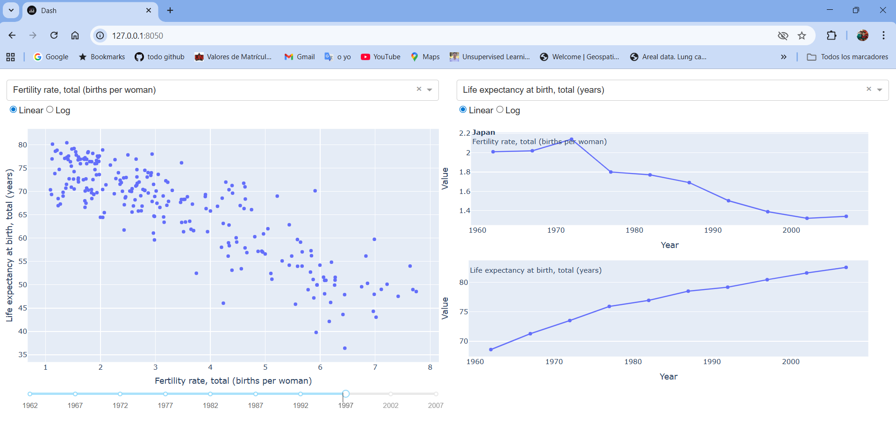
Despligue de apps#
Dash App para mapas#
Comenzamos cargando el DataFrame que utilizaremos en nuestra aplicación. Los datos provienen del archivo intro_bees.csv, el cual contiene información detallada sobre diversas enfermedades que afectan a las colonias de abejas en distintos estados de Estados Unidos.
Este conjunto de datos nos permitirá explorar cómo varían ciertos indicadores relacionados con la salud de las abejas a lo largo del tiempo y en diferentes regiones.
Las columnas más relevantes para este ejemplo son:
State: Estado de EE. UU. donde se recopilaron los datos.
Year: Año en el que se realizó la medición.
Affected by: Tipo de enfermedad o factor que afecta a las colonias.
Pct of Colonies Impacted: Porcentaje de colonias de abejas afectadas por cada enfermedad.
Este dataset será la base para construir visualizaciones interactivas que nos ayuden a analizar el comportamiento y las tendencias de las enfermedades en las poblaciones de abejas.
['State', 'ANSI', 'Affected by', 'Year', 'state_code']
El Código ANSI hace referencia a los estándares establecidos por el American National Standards Institute (Instituto Nacional Estadounidense de Estándares), una organización encargada de coordinar el desarrollo de normas técnicas que garantizan la calidad, seguridad, interoperabilidad y eficiencia en diversos sectores industriales, tecnológicos y científicos.
Estos códigos proporcionan un marco de referencia ampliamente aceptado a nivel internacional para la normalización de procesos, productos y servicios, facilitando la compatibilidad y el cumplimiento regulatorio en diferentes ámbitos.
import pandas as pd
df = pd.read_csv("https://raw.githubusercontent.com/cdeoroaguado/Datos/refs/heads/main/dataviz/intro_bees.csv")
df.head()
| Program | Year | Period | State | ANSI | Affected by | Pct of Colonies Impacted | state_code | |
|---|---|---|---|---|---|---|---|---|
| 0 | SURVEY | 2019 | JAN THRU MAR | Alabama | 1 | Disease | 1.8 | AL |
| 1 | SURVEY | 2019 | JAN THRU MAR | Alabama | 1 | Other | 3.1 | AL |
| 2 | SURVEY | 2019 | JAN THRU MAR | Alabama | 1 | Pesticides | 0.3 | AL |
| 3 | SURVEY | 2019 | JAN THRU MAR | Alabama | 1 | Pests_excl_Varroa | 22.7 | AL |
| 4 | SURVEY | 2019 | JAN THRU MAR | Alabama | 1 | Unknown | 9.0 | AL |
Luego agrupamos nuestro
DataFramebasados en las columnas de interés y calculamos elporcentaje promedio de colonias afectadaspara esta agrupaciónPct of Colonies Impacted
df = df.groupby(['State', 'ANSI', 'Affected by', 'Year', 'state_code'])[['Pct of Colonies Impacted']].mean()
df.reset_index(inplace=True)
df.head()
| State | ANSI | Affected by | Year | state_code | Pct of Colonies Impacted | |
|---|---|---|---|---|---|---|
| 0 | Alabama | 1 | Disease | 2015 | AL | 0.05 |
| 1 | Alabama | 1 | Disease | 2016 | AL | 1.20 |
| 2 | Alabama | 1 | Disease | 2017 | AL | 2.25 |
| 3 | Alabama | 1 | Disease | 2018 | AL | 1.30 |
| 4 | Alabama | 1 | Disease | 2019 | AL | 1.80 |
Comenzamos a implementar nuestro
app.layoutque como es sabido, esta componente corresponde al “diseño” de la aplicación y describe el aspecto de la misma.html.H1recuerde que es una envoltura para el elemento<h1> de HTML5, elemento de encabezado de primer nivel. Luego de esto escribimos nuestrodcc.Dropdowncon su respectivo id el cual sera invocado por nuesta función callback. Eldcc.Dropdowncorresponde a nuestro menu de opciones, en las que colocamos por defectovalue=2015. Luego escribimos un nuevohtml.Divpara crear un output que entregue como mensaje cual fué el años seleccionado, esta es una clasechildren, pues depende del input suministrado en elDropdown. Luego agregamos el componentedcc.Graphse puede utilizar para renderizar cualquier visualización de datosplotly-powered, recibe como argumentofigure. Nótese que se le asgina también un id el cual será leido por nuestrocallback
# Definir el diseño de la aplicación (layout)
app.layout = html.Div([
# Título principal de la aplicación
html.H1(
"Web Application Dashboards with Dash",
style={'text-align': 'center'} # Centrar el texto
),
# Menú desplegable (Dropdown) para seleccionar el año
dcc.Dropdown(
id="slct_year", # ID del componente para usarlo en callbacks
options=[
{"label": "2015", "value": 2015},
{"label": "2016", "value": 2016},
{"label": "2017", "value": 2017},
{"label": "2018", "value": 2018}
],
multi=False, # Solo permite seleccionar un valor
value=2015, # Valor inicial por defecto
style={'width': "40%"} # Ancho del menú desplegable
),
# Div donde se mostrará el resultado del callback (texto o datos)
html.Div(id='output_container', children=[]),
# Salto de línea para dar espacio entre elementos
html.Br(),
# Gráfico interactivo que se actualizará según el año seleccionado
dcc.Graph(
id='my_bee_map', # ID para referenciar el gráfico en el callback
figure={} # Figura inicial vacía
)
])
Pasamos a implementar nuestra función
callback. En nuestrocallbacknótese que tenemos dos outputs,output_containerque es tipochildren, recuerde que el propósito de la propiedadchildrenes permitir a los usuarios anidar componentes, tal y como hacemos enHTML, en éste casoInput()permite a un componente father actualizar datos en el componentechildren. La funciónupdate_graphrecibe una sola componente, esto es porque tenemos un sólo input, dado que los outputs son dos, nuestrocallbackdebe también retornar dos objetos, los cuales en este caso llamamoscontaineryfig.
# Callback: conecta el menú desplegable (Dropdown) con el texto y el mapa
@app.callback(
[
# Salidas: texto dinámico y figura del mapa
Output(component_id='output_container', component_property='children'),
Output(component_id='my_bee_map', component_property='figure')
],
[
# Entrada: valor seleccionado en el Dropdown (año)
Input(component_id='slct_year', component_property='value')
]
)
def update_graph(option_slctd):
# Imprime en consola el año seleccionado (útil para depuración)
print(option_slctd)
print(type(option_slctd))
# Texto dinámico que se mostrará en la app con el año elegido
container = "The year chosen by user was: {}".format(option_slctd)
# Copiar el DataFrame original para no modificarlo directamente
dff = df.copy()
# Filtrar los datos por el año seleccionado
dff = dff[dff["Year"] == option_slctd]
# Filtrar los datos por el tipo de enfermedad "Varroa_mites"
dff = dff[dff["Affected by"] == "Varroa_mites"]
# Crear un mapa coroplético (mapa de calor por estado de EE. UU.)
fig = px.choropleth(
data_frame=dff, # DataFrame filtrado
locationmode='USA-states', # Modo: estados de EE. UU.
locations='state_code', # Columna con códigos de estado
scope="usa", # Mostrar solo el mapa de EE. UU.
color='Pct of Colonies Impacted', # Color según % de colonias afectadas
hover_data=['State', 'Pct of Colonies Impacted'], # Datos que se muestran al pasar el cursor
color_continuous_scale=px.colors.sequential.YlOrRd, # Escala de colores
labels={'Pct of Colonies Impacted': '% of Bee Colonies'}, # Etiqueta personalizada
template='plotly_dark' # Tema oscuro para el mapa
)
# Retornar dos salidas: el texto dinámico y la figura actualizada
return container, fig
La siguiente función, estudiada anteriormente, es la encargada de iniciar la ejecución de nuestra aplicación Dash.
Al establecer el parámetro debug=True, activamos el modo de depuración, lo que permite:
Recargar automáticamente la aplicación cada vez que se detectan cambios en el código.
Mostrar mensajes de error detallados en caso de fallos durante la ejecución.
Facilitar el proceso de desarrollo y prueba al ofrecer información en tiempo real.
Esta opción es especialmente útil durante la fase de desarrollo, aunque en entornos de producción se recomienda desactivarla.
if __name__ == '__main__':
app.run(debug=True)
El codigo completo utlizado en este ejemplo es el siguiente
# Importar las librerías necesarias
import pandas as pd # Manejo y análisis de datos
import plotly.express as px # Creación de gráficos interactivos
import plotly.graph_objects as go # (Opcional) gráficos personalizados
from dash import Dash, dcc, html, Input, Output # Componentes de la app Dash
# Crear la aplicación Dash
app = Dash(__name__)
# ---------------------------------------------
# Cargar y preparar el conjunto de datos
# ---------------------------------------------
# Leer el archivo CSV con información sobre enfermedades que afectan colonias de abejas
df = pd.read_csv(
"https://raw.githubusercontent.com/lihkir/Uninorte/main/AppliedStatisticMS/DataVisualizationRPython/Lectures/Python/PythonDataSets/intro_bees.csv"
)
# Agrupar por columnas clave y calcular el promedio del porcentaje de colonias afectadas
df = df.groupby(['State', 'ANSI', 'Affected by', 'Year', 'state_code'])[['Pct of Colonies Impacted']].mean()
# Reiniciar el índice del DataFrame después de agrupar
df.reset_index(inplace=True)
# Mostrar las primeras 5 filas para verificar la estructura de los datos
print(df[:5])
# ---------------------------------------------
# Definir el diseño de la aplicación (layout)
# ---------------------------------------------
app.layout = html.Div([
# Título principal del dashboard
html.H1(
"Desarrollo de Dashboards Web con Dash",
style={'text-align': 'center'} # Centrar el título
),
# Dropdown para seleccionar el año de análisis
dcc.Dropdown(
id="slct_year", # ID del componente para usarlo en el callback
options=[
{"label": "2015", "value": 2015},
{"label": "2016", "value": 2016},
{"label": "2017", "value": 2017},
{"label": "2018", "value": 2018}
],
multi=False, # Permite seleccionar solo un valor
value=2015, # Valor inicial por defecto
style={'width': "40%"} # Ancho del selector
),
# Contenedor para mostrar texto dinámico (por ejemplo, año seleccionado)
html.Div(id='output_container', children=[]),
# Salto de línea para separar secciones
html.Br(),
# Gráfico que mostrará el mapa interactivo
dcc.Graph(
id='my_bee_map', # ID para el callback
figure={} # Figura inicial vacía
)
])
# ---------------------------------------------
# Callback: Conectar la selección con el gráfico
# ---------------------------------------------
@app.callback(
[
# Salida 1: texto con el año seleccionado
Output(component_id='output_container', component_property='children'),
# Salida 2: gráfico actualizado
Output(component_id='my_bee_map', component_property='figure')
],
[
# Entrada: año seleccionado en el Dropdown
Input(component_id='slct_year', component_property='value')
]
)
def update_graph(option_slctd):
"""
Esta función se ejecuta cada vez que el usuario selecciona un año.
Filtra los datos según la selección y actualiza tanto el texto como el mapa.
"""
# Crear texto dinámico con el año seleccionado
container = "El año seleccionado por el usuario fue: {}".format(option_slctd)
# Copiar el DataFrame original para no modificarlo directamente
dff = df.copy()
# Filtrar el DataFrame por el año seleccionado
dff = dff[dff["Year"] == option_slctd]
# Filtrar el DataFrame por el tipo de enfermedad "Varroa_mites"
dff = dff[dff["Affected by"] == "Varroa_mites"]
# Crear un mapa coroplético (mapa por estados de EE.UU.)
fig = px.choropleth(
data_frame=dff, # DataFrame filtrado
locationmode='USA-states', # Modo: estados de EE.UU.
locations='state_code', # Columna con códigos de estado
scope="usa", # Limitar mapa a EE.UU.
color='Pct of Colonies Impacted', # Color basado en % de colonias afectadas
hover_data=['State', 'Pct of Colonies Impacted'], # Información al pasar el cursor
color_continuous_scale=px.colors.sequential.YlOrRd, # Paleta de colores
labels={'Pct of Colonies Impacted': '% of Bee Colonies'}, # Etiqueta personalizada
template='plotly_dark' # Estilo oscuro del mapa
)
# Retornar las salidas: texto y mapa
return container, fig
# ---------------------------------------------
# Ejecutar el servidor local
# ---------------------------------------------
if __name__ == '__main__':
# Ejecutar la app en modo debug (recarga automática y mensajes detallados)
app.run(debug=True)
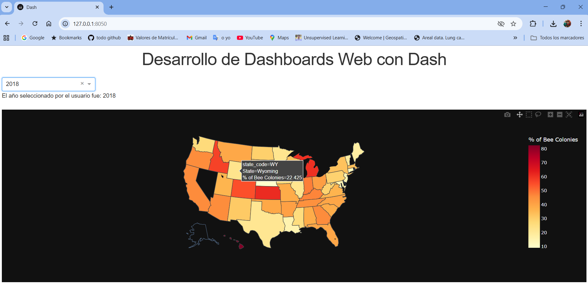
Dash App para precios de acciones y bandas de Bollinger#
En esta aplicación realizaremos la visualización del precio de diferentes acciones bursátiles junto con el indicador técnico conocido como Bandas de Bollinger. Este indicador toma como referencia la media del precio de un activo y le suma o resta un múltiplo de la desviación estándar para conformar las bandas superior e inferior. Las bandas de Bollinger son ampliamente utilizadas en el análisis técnico, ya que permiten identificar posibles zonas de sobrecompra o sobreventa, facilitando la toma de decisiones de inversión.
Para construir esta aplicación utilizaremos la librería
colorlover, que nos permitirá definir una escala de colores personalizada para las visualizaciones de las bandas. Posteriormente, cargaremos un DataFrame que contiene los datos históricos de las acciones seleccionadas, entre las que se encuentran: AAPL, TSLA, COKE, YHOO y GOOGL. Estos valores se encuentran almacenados en la columnaStockde nuestro conjunto de datos.
df = pd.read_csv('https://raw.githubusercontent.com/cdeoroaguado/Datos/refs/heads/main/dataviz/dash-stock-ticker-demo.csv')
df.head()
| Unnamed: 0 | Date | Open | High | Low | Close | Volume | ExDividend | SplitRatio | AdjOpen | AdjHigh | AdjLow | AdjClose | AdjVolume | Stock | |
|---|---|---|---|---|---|---|---|---|---|---|---|---|---|---|---|
| 0 | 0 | 2017-12-29 | 170.52 | 170.590 | 169.220 | 169.23 | 25643711.0 | 0.0 | 1.0 | 170.52 | 170.590 | 169.220 | 169.23 | 25643711.0 | AAPL |
| 1 | 1 | 2017-12-28 | 171.00 | 171.850 | 170.480 | 171.08 | 15997739.0 | 0.0 | 1.0 | 171.00 | 171.850 | 170.480 | 171.08 | 15997739.0 | AAPL |
| 2 | 2 | 2017-12-27 | 170.10 | 170.780 | 169.710 | 170.60 | 21672062.0 | 0.0 | 1.0 | 170.10 | 170.780 | 169.710 | 170.60 | 21672062.0 | AAPL |
| 3 | 3 | 2017-12-26 | 170.80 | 171.470 | 169.679 | 170.57 | 32968167.0 | 0.0 | 1.0 | 170.80 | 171.470 | 169.679 | 170.57 | 32968167.0 | AAPL |
| 4 | 4 | 2017-12-22 | 174.68 | 175.424 | 174.500 | 175.01 | 16052615.0 | 0.0 | 1.0 | 174.68 | 175.424 | 174.500 | 175.01 | 16052615.0 | AAPL |
Una vez cargado nuestro DataFrame, procedemos a implementar el
app.layout, es decir, el diseño o estructura principal de la aplicación, tal como lo hicimos en el ejemplo anterior.En esta ocasión, utilizamos
html.H2, que actúa como una envoltura para el elemento<h2>de HTML5, el cual representa un encabezado de segundo nivel dentro de la jerarquía del documento. Además, incorporamos el logo de Plotly como parte del encabezado, aunque es importante resaltar que puede reemplazarlo por el logotipo o imagen corporativa de su preferencia, adaptando así el diseño a las necesidades de su proyecto o empresa.
# Crear un contenedor principal para el encabezado de la aplicación
html.Div([
# Título principal de la app
html.H2(
'Finance Explorer', # Texto del encabezado
style={
'display': 'inline', # Mostrar en línea con otros elementos
'float': 'left', # Alinear a la izquierda
'font-size': '2.65em', # Tamaño grande del texto
'margin-left': '7px', # Espacio a la izquierda
'font-weight': 'bolder', # Texto en negrita
'font-family': 'Product Sans',# Fuente personalizada
'color': "rgba(117, 117, 117, 0.95)", # Color gris con transparencia
'margin-top': '20px', # Espacio superior
'margin-bottom': '0' # Sin espacio inferior
}
),
# Logo de la aplicación (en este caso, el logo de Dash/Plotly)
html.Img(
src="https://s3-us-west-1.amazonaws.com/plotly-tutorials/logo/new-branding/dash-logo-by-plotly-stripe.png",
style={
'height': '100px', # Altura de la imagen
'float': 'right' # Alinear a la derecha
},
),
])
Una vez definido el encabezado de nuestra aplicación, procedemos a implementar el componente
dcc.Dropdowncon un identificador único (id), el cual será utilizado posteriormente dentro de la funcióncallbackpara actualizar el contenido dinámicamente.Este componente representa el menú de opciones interactivo, desde el cual el usuario puede seleccionar uno o varios valores de acciones bursátiles (stocks) para su análisis. En este caso, hemos configurado por defecto dos opciones:
['YHOO', 'GOOGL'], lo que permite que la aplicación cargue información inicial sin necesidad de interacción previa.Posteriormente, creamos un contenedor con
html.Div()que servirá como espacio para renderizar las gráficas asociadas a cada stock seleccionado. Este contenedor se actualizará automáticamente cada vez que el usuario cambie las opciones desde el menú desplegable.
# Menú desplegable para seleccionar acciones (stocks)
dcc.Dropdown(
id='stock-ticker-input', # ID que se usará en el callback
options=[ # Lista de opciones generada dinámicamente a partir del DataFrame
{'label': s[0], 'value': str(s[1])}
for s in zip(df.Stock.unique(), df.Stock.unique())
],
value=['YHOO', 'GOOGL'], # Valores seleccionados por defecto
multi=True # Permite seleccionar múltiples opciones al mismo tiempo
),
# Contenedor donde se mostrarán las gráficas según la selección
html.Div(id='graphs')
Definimos la función encargada de calcular nuestro indicador de análisis técnico. En esta función establecemos el parámetro
window_size = 10, que representa el período de cálculo de la media móvil, es decir, el número de observaciones que se tendrán en cuenta para suavizar la serie de datos. Además, especificamos el parámetronum_of_std = 5, que indica el número de desviaciones estándar que deseamos utilizar para determinar la distancia con respecto a la media móvil. Esto nos permitirá identificar zonas de sobrecompra o sobreventa y analizar el comportamiento del activo con mayor precisión.
# Función para calcular las Bandas de Bollinger (análisis técnico)
def bbands(price, window_size=10, num_of_std=5):
# Calcular la media móvil simple en un período definido
rolling_mean = price.rolling(window=window_size).mean()
# Calcular la desviación estándar en el mismo período
rolling_std = price.rolling(window=window_size).std()
# Banda superior = media móvil + (número de desviaciones estándar)
upper_band = rolling_mean + (rolling_std * num_of_std)
# Banda inferior = media móvil - (número de desviaciones estándar)
lower_band = rolling_mean - (rolling_std * num_of_std)
# Retornar las tres series: media, banda superior e inferior
return rolling_mean, upper_band, lower_band
A continuación, definimos nuestra función
callback, la cual tendrá comoOutputlas figuras correspondientes al indicador técnico para cada acción (stock). Si el usuario no selecciona ninguna acción en el menú desplegable, aparecerá el mensaje de encabezado: “Select a stock ticker.”, indicando que es necesario elegir un símbolo (ticker) de interés.Una vez recibido el
ticker, filtramos nuestroDataFrameoriginal para quedarnos únicamente con los datos de la columnaStockque coincidan con elInput ticker. A partir de este nuevoDataFrame, seleccionamos las columnas necesarias para calcular el indicador de Bandas de Bollinger (bollinger_band).Además, definimos la escala de colores que se usará en la visualización de las bandas, la cual será el input para la función encargada de calcularlas (
bbands). Los colores se escalan de acuerdo con la banda que se va a representar.Posteriormente, agregamos cada una de las figuras generadas a una lista llamada
graphs, que contendrá todas las visualizaciones correspondientes a cada acción seleccionada, mostrando cada una de ellas una debajo de la otra.
Estas figuras son indexadas conid=tickery se obtienen al combinar el gráfico de velas japonesas (candlestick) con las bandas calculadas (bollinger_traces).Finalmente, configuramos los parámetros de estilo, como los márgenes y la posición de la leyenda, utilizando comandos como:
'margin': {'b': 0, 'r': 10, 'l': 60, 't': 0},
'legend': {'x': 0}
# Callback que actualiza las gráficas cuando se seleccionan uno o más 'tickers' en el dropdown
@app.callback(
Output('graphs', 'children'), # Salida: lista de gráficos que se mostrarán en la app
[Input('stock-ticker-input', 'value')] # Entrada: lista de acciones seleccionadas por el usuario
)
def update_graph(tickers):
# Lista que almacenará las gráficas generadas
graphs = []
# Si no se ha seleccionado ningún ticker, mostrar mensaje informativo
if not tickers:
graphs.append(html.H3(
"Select a stock ticker.", # Mensaje de advertencia
style={'marginTop': 20, 'marginBottom': 20} # Espaciado superior e inferior
))
else:
# Recorrer cada ticker seleccionado para generar su gráfico individual
for i, ticker in enumerate(tickers):
# Filtrar el DataFrame original para el ticker actual
dff = df[df['Stock'] == ticker]
# Crear gráfico de velas japonesas (candlestick)
candlestick = {
'x': dff['Date'], # Eje X: fechas
'open': dff['Open'], # Precio de apertura
'high': dff['High'], # Precio máximo
'low': dff['Low'], # Precio mínimo
'close': dff['Close'], # Precio de cierre
'type': 'candlestick', # Tipo de gráfico
'name': ticker, # Nombre de la acción
'legendgroup': ticker, # Agrupación en la leyenda
'increasing': {'line': {'color': colorscale[0]}}, # Color al alza
'decreasing': {'line': {'color': colorscale[1]}} # Color a la baja
}
# Calcular las Bandas de Bollinger
bb_bands = bbands(dff.Close)
# Crear las trazas para las bandas de Bollinger
bollinger_traces = [{
'x': dff['Date'], # Eje X: fechas
'y': y, # Eje Y: valores de la banda
'type': 'scatter', # Tipo de gráfico: línea
'mode': 'lines', # Modo: líneas continuas
'line': { # Estilo de la línea
'width': 1,
'color': colorscale[(i*2) % len(colorscale)]
},
'hoverinfo': 'none', # Desactivar información emergente
'legendgroup': ticker, # Mantener el grupo en la leyenda
'showlegend': True if i == 0 else False, # Mostrar leyenda solo para el primer gráfico
'name': '{} - bollinger bands'.format(ticker) # Nombre en la leyenda
} for i, y in enumerate(bb_bands)]
# Agregar el gráfico completo (candlestick + bandas) a la lista de gráficos
graphs.append(dcc.Graph(
id=ticker, # ID del gráfico
figure={ # Figura a renderizar
'data': [candlestick] + bollinger_traces, # Datos del gráfico
'layout': { # Configuración del diseño
'margin': {'b': 0, 'r': 10, 'l': 60, 't': 0}, # Márgenes
'legend': {'x': 0} # Posición de la leyenda
}
}
))
# Retornar la lista de gráficos generados
return graphs
El código completo de la app lo presentamos a continuación. Ejecútela desde su terminal o editor VS Code por ejemplo. Antes debe instalar
colorloverpor medio de
pip install colorlover
El codigo completo es el siguiente
# ==========================
# Importación de librerías
# ==========================
from dash import Dash, dcc, html, Input, Output # Dash: componentes base
import colorlover as cl # colorlover: paletas de colores
import datetime as dt # datetime: manejo de fechas
import flask # flask: servidor backend
import os # os: interacción con el sistema operativo
import pandas as pd # pandas: manejo de datos
import time # time: tiempos de ejecución
# ==========================
# Inicialización de la app
# ==========================
app = Dash(__name__) # Crear instancia principal de la app
server = app.server # Permite desplegar la app en servidores externos
# Configurar para no servir scripts localmente
app.scripts.config.serve_locally = False
# Paleta de colores para gráficos
colorscale = cl.scales['9']['qual']['Paired']
# ==========================
# Cargar el DataFrame
# ==========================
# Leer el archivo CSV con datos financieros desde GitHub
df = pd.read_csv('https://raw.githubusercontent.com/cdeoroaguado/Datos/refs/heads/main/dataviz/dash-stock-ticker-demo.csv')
# ==========================
# Layout de la aplicación
# ==========================
app.layout = html.Div([
# Encabezado principal
html.Div([
html.H2(
'Finance Explorer', # Título de la app
style={
'display': 'inline', # Mostrar en línea
'float': 'left', # Alinear a la izquierda
'font-size': '2.65em', # Tamaño de fuente
'margin-left': '7px', # Margen izquierdo
'font-weight': 'bolder', # Negrita
'font-family': 'Product Sans',# Fuente personalizada
'color': "rgba(117, 117, 117, 0.95)", # Color gris
'margin-top': '20px', # Margen superior
'margin-bottom': '0' # Sin margen inferior
}
),
# Logo de la aplicación
html.Img(
src="https://s3-us-west-1.amazonaws.com/plotly-tutorials/logo/new-branding/dash-logo-by-plotly-stripe.png",
style={
'height': '100px', # Tamaño del logo
'float': 'right' # Alinear a la derecha
},
),
]),
# Menú desplegable para seleccionar acciones (stocks)
dcc.Dropdown(
id='stock-ticker-input', # ID para el callback
options=[ # Lista de opciones generada dinámicamente
{'label': s[0], 'value': str(s[1])}
for s in zip(df.Stock.unique(), df.Stock.unique())
],
value=['YHOO', 'GOOGL'], # Valores por defecto
multi=True # Permite seleccionar múltiples acciones
),
# Contenedor donde se mostrarán los gráficos
html.Div(id='graphs')
], className="container")
# ==========================
# Función para calcular Bandas de Bollinger
# ==========================
def bbands(price, window_size=10, num_of_std=5):
# Calcular media móvil
rolling_mean = price.rolling(window=window_size).mean()
# Calcular desviación estándar
rolling_std = price.rolling(window=window_size).std()
# Calcular banda superior
upper_band = rolling_mean + (rolling_std * num_of_std)
# Calcular banda inferior
lower_band = rolling_mean - (rolling_std * num_of_std)
# Retornar las tres series
return rolling_mean, upper_band, lower_band
# ==========================
# Callback: Actualizar gráficos dinámicamente
# ==========================
@app.callback(
Output('graphs', 'children'), # Salida: gráficos
[Input('stock-ticker-input', 'value')] # Entrada: lista de tickers seleccionados
)
def update_graph(tickers):
graphs = [] # Lista que almacenará los gráficos
# Si no hay acciones seleccionadas, mostrar mensaje
if not tickers:
graphs.append(html.H3(
"Select a stock ticker.", # Mensaje de advertencia
style={'marginTop': 20, 'marginBottom': 20}
))
else:
# Crear gráficos para cada ticker seleccionado
for i, ticker in enumerate(tickers):
# Filtrar DataFrame para el ticker actual
dff = df[df['Stock'] == ticker]
# Crear gráfico de velas japonesas
candlestick = {
'x': dff['Date'], # Fechas
'open': dff['Open'], # Precio de apertura
'high': dff['High'], # Precio máximo
'low': dff['Low'], # Precio mínimo
'close': dff['Close'], # Precio de cierre
'type': 'candlestick', # Tipo de gráfico
'name': ticker, # Nombre del ticker
'legendgroup': ticker, # Grupo de leyenda
'increasing': {'line': {'color': colorscale[0]}}, # Color subida
'decreasing': {'line': {'color': colorscale[1]}} # Color bajada
}
# Calcular bandas de Bollinger
bb_bands = bbands(dff.Close)
# Crear trazas para las bandas
bollinger_traces = [{
'x': dff['Date'], # Fechas
'y': y, # Valores de la banda
'type': 'scatter', # Tipo línea
'mode': 'lines', # Modo líneas
'line': {
'width': 1,
'color': colorscale[(i * 2) % len(colorscale)] # Color dinámico
},
'hoverinfo': 'none', # Sin hover
'legendgroup': ticker, # Grupo de leyenda
'showlegend': True if i == 0 else False, # Mostrar solo en el primero
'name': '{} - bollinger bands'.format(ticker)
} for i, y in enumerate(bb_bands)]
# Añadir el gráfico a la lista
graphs.append(dcc.Graph(
id=ticker, # ID único por gráfico
figure={
'data': [candlestick] + bollinger_traces, # Combina velas + bandas
'layout': {
'margin': {'b': 0, 'r': 10, 'l': 60, 't': 0}, # Márgenes
'legend': {'x': 0} # Posición de la leyenda
}
}
))
# Retornar la lista de gráficos actualizada
return graphs
# ==========================
# Ejecutar el servidor
# ==========================
if __name__ == '__main__':
app.run(debug=True) # Modo debug para recargar automáticamente
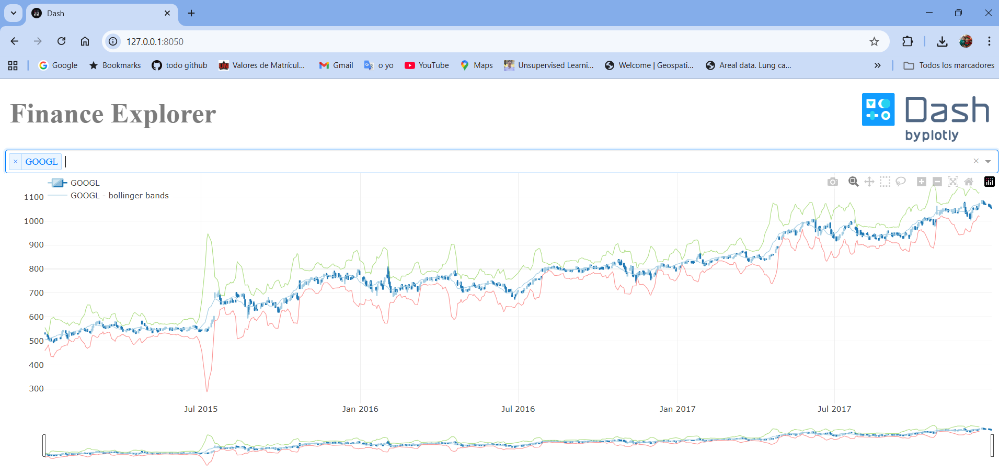
Serialización de un modelo en Python#
La serialización de un modelo se refiere al proceso de convertir un modelo entrenado (por ejemplo, de machine learning) en un formato que pueda ser almacenado en disco y posteriormente cargado para su uso sin necesidad de volver a entrenarlo.
En otras palabras, es como “guardar el estado del modelo” para reutilizarlo después en producción, en un dashboard, API o aplicación.
Objetivo de la Serialización
Evitar volver a entrenar el modelo cada vez que lo necesites.
Compartirlo o desplegarlo fácilmente en otros entornos.
Integrarlo en aplicaciones (por ejemplo, con Flask, FastAPI o Dash).
Serialización de un modelo#
En este ejemplo, realizaremos el proceso completo de entrenamiento, serialización y carga de un modelo de regresión lineal utilizando el conjunto de datos
data_banco_creditos.csv. Nuestro objetivo será predecir el monto de crédito en millones a partir del tiempo de análisis en minutos. Carguemos los datos
import pandas as pd
df = pd.read_csv("https://raw.githubusercontent.com/cdeoroaguado/Datos/refs/heads/main/datadescrip/data_banco_creditos.csv")
df.head()
| monto_credito_millones | tiempo_analisis_min | |
|---|---|---|
| 0 | 39.14 | 56.16 |
| 1 | 59.97 | 61.97 |
| 2 | 52.83 | 61.53 |
| 3 | 34.94 | 45.41 |
| 4 | 44.21 | 75.60 |
from sklearn.linear_model import LinearRegression
from sklearn.model_selection import train_test_split
# Seleccionar variable independiente (X) y dependiente (y)
X = df[['tiempo_analisis_min']] # Variable predictora
y = df['monto_credito_millones'] # Variable objetivo
# Dividir datos en entrenamiento (80%) y prueba (20%)
X_train, X_test, y_train, y_test = train_test_split(
X, y, test_size=0.2, random_state=42
)
# Crear el modelo de regresión lineal
modelo_credito = LinearRegression()
# Entrenar el modelo con los datos de entrenamiento
modelo_credito.fit(X_train, y_train)
LinearRegression()In a Jupyter environment, please rerun this cell to show the HTML representation or trust the notebook.
On GitHub, the HTML representation is unable to render, please try loading this page with nbviewer.org.
LinearRegression()
Serializamos (guardar) el modelo
import joblib
joblib.dump(modelo_credito, "modelo_credito.pkl")
['modelo_credito.pkl']
Carguemos el modelo y realicemos una predicción:
import joblib
# Cargar el modelo desde el archivo para usarlo más tarde
modelo_cargado = joblib.load("modelo_credito.pkl")
# Realizar una predicción con el modelo cargado
tiempo_nuevo = pd.DataFrame({'tiempo_analisis_min': [45]}) # Ejemplo: 45 minutos de análisis
prediccion = modelo_cargado.predict(tiempo_nuevo)
# Mostrar el resultado de la predicción
print(f"Predicción del monto de crédito: {prediccion[0]:.2f} millones")
Predicción del monto de crédito: 36.53 millones
Dash con modelo de predicción#
Este proyecto integra un modelo de machine learning previamente entrenado y serializado con joblib dentro de una aplicación web desarrollada con Dash. A través de una interfaz sencilla e interactiva, el usuario puede ingresar valores de entrada —en este caso, el tiempo de análisis en minutos— y obtener en tiempo real la predicción del monto de crédito estimado. Esta combinación entre un modelo predictivo y un entorno visual permite construir aplicaciones de análisis de datos accesibles, dinámicas y fáciles de desplegar en entornos productivos, facilitando la toma de decisiones basada en datos.
Hagamos el dash con el modelo
import dash
from dash import dcc, html, Input, Output
import pandas as pd
import joblib
import plotly.express as px
import numpy as np
# Cargar datos y modelo serializado
df = pd.read_csv("data_banco_creditos.csv")
modelo = joblib.load("modelo_credito.pkl")
# Crear puntos para la línea de regresión
X_line = np.linspace(df['tiempo_analisis_min'].min(), df['tiempo_analisis_min'].max(), 100)
X_line_df = pd.DataFrame({'tiempo_analisis_min': X_line})
y_line = modelo.predict(X_line_df)
# Crear gráfico de dispersión con la recta de regresión
fig = px.scatter(
df,
x="tiempo_analisis_min",
y="monto_credito_millones",
title="Relación entre tiempo de análisis y monto del crédito",
labels={
"tiempo_analisis_min": "Tiempo de análisis (min)",
"monto_credito_millones": "Monto de crédito (millones)"
}
)
# Agregar la línea de regresión al gráfico
fig.add_traces(px.line(
x=X_line,
y=y_line,
labels={"x": "Tiempo de análisis (min)", "y": "Monto de crédito (millones)"}
).data)
# Crear la aplicación Dash
app = dash.Dash(__name__)
# Layout en dos columnas: gráfico (izquierda) y predicción (derecha)
app.layout = html.Div([
html.H1("Predicción de monto de crédito con regresión lineal"),
html.Div([
# Columna izquierda: gráfico con la recta de regresión
html.Div([
dcc.Graph(
id="grafico-regresion",
figure=fig
)
], style={"width": "60%", "display": "inline-block", "vertical-align": "top"}),
# Columna derecha: entrada y predicción
html.Div([
html.H3("Haz una predicción:"),
dcc.Input(
id="input-tiempo-analisis",
type="number",
placeholder="Escribe el tiempo de análisis (min)",
style={"margin-bottom": "10px", "width": "100%"}
),
html.Div(
id="output-prediccion",
style={
"font-size": "20px",
"margin-top": "20px",
"padding": "10px",
"background-color": "#f9f9f9",
"border": "1px solid #ddd",
"border-radius": "5px"
}
)
], style={"width": "35%", "display": "inline-block", "padding": "20px"})
])
])
# Callback para realizar la predicción
@app.callback(
Output("output-prediccion", "children"),
Input("input-tiempo-analisis", "value")
)
def predecir_credito(tiempo_analisis):
if tiempo_analisis is None:
return "✍️ Ingresa un valor de tiempo para obtener la predicción."
# Crear DataFrame con el nombre correcto de la variable
tiempo_df = pd.DataFrame({'tiempo_analisis_min': [tiempo_analisis]})
pred = modelo.predict(tiempo_df)[0]
return f"💰 Predicción del monto de crédito: {pred:.2f} millones"
# Ejecutar la app
if __name__ == '__main__':
app.run(debug=True)
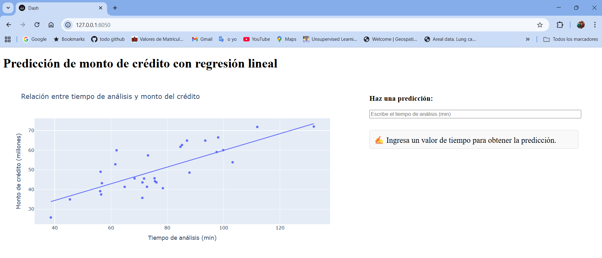
Docker#
Docker es una plataforma que permite crear, ejecutar y distribuir aplicaciones dentro de contenedores.
Un contenedor es un entorno aislado que contiene todo lo necesario para ejecutar una aplicación: código, librerías, sistema de archivos, configuraciones, etc.
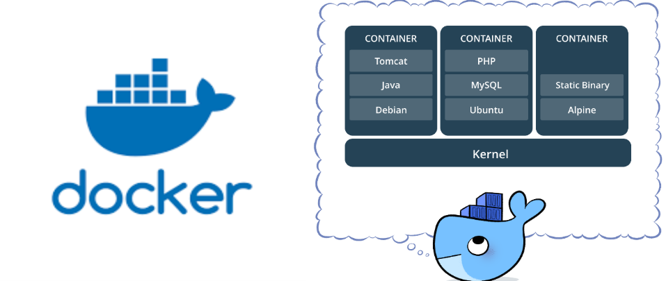
¿Qué es un contenedor?#
Un contenedor es como una mini computadora dentro de tu computadora:
Tiene su propio sistema de archivos.
Sus propias dependencias (por ejemplo, versiones específicas de Python, librerías, etc.).
Se ejecuta de forma aislada del sistema operativo host.
Es ligero y rápido, más que una máquina virtual.
¿Para qué sirve Docker?
Con Docker puedes:
Empaquetar tu app con todas sus dependencias.
Ejecutarla en cualquier sistema operativo.
Evitar errores por versiones de librerías o configuraciones distintas.
Docker funciona de la siguiente manera
Escribes un
Dockerfilecon instrucciones para instalar dependencias y correr tu app.Docker construye una imagen con eso.
Docker ejecuta esa imagen en un contenedor aislado.
Flujo de trabajo con Docker#
El flujo de trabajo con docker es el siguiente
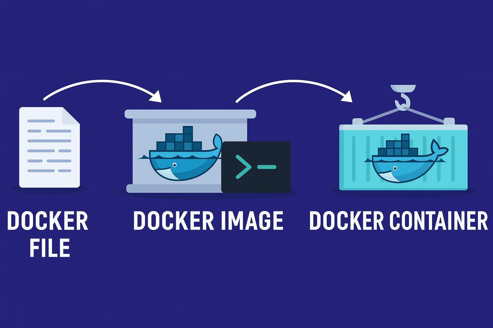
1. Dockerfile#
El Dockerfile es el archivo fuente donde se escriben todas las instrucciones necesarias para construir el entorno de tu aplicación.
Incluye comandos como:
FROM: define la imagen base.COPY: copia archivos al contenedor.RUN: ejecuta comandos (instalar dependencias, por ejemplo).CMD: define el comando por defecto al ejecutar el contenedor.
Es como un manual de construcción de tu app.
2. Docker Image#
Una vez que tienes el Dockerfile, ejecutas desde tu terminal:
docker build -t mi-app .
Componentes Clave
Componente |
Descripción |
|---|---|
Imagen (Image) |
Es el molde que contiene el sistema, tu código y librerías. |
Contenedor (Container) |
Es una instancia en ejecución de una imagen. |
Dockerfile |
Archivo donde defines los pasos para construir una imagen. |
Docker Hub |
Repositorio donde puedes subir y compartir imágenes. |
Instalación de Docker en tu computador#
Veamos los pasos para instalar Docker
Verifica requisitos:
Sistema operativo: Windows 10 o 11 (64 bits)
Virtualización habilitada (puedes verificarlo en el Administrador de tareas → pestaña “Rendimiento”)
Descarga Docker Desktop
Ve a: https://www.docker.com/products/docker-desktop. Haz clic en “Download for Windows”.
Ejecuta el instalador
Acepta los términos y condiciones.
Asegúrate de marcar la opción “Use WSL 2 instead of Hyper-V” (más recomendada).
Finaliza la instalación.
Reinicia tu computador si es necesario
Verifica instalación
Abre una terminal (CMD o PowerShell) y escribe:
docker --version. Si ya esta instalado te debe mostrar algo asi:Docker version 28.4.0, build d8eb465
Comandos básicos de Docker#
Compila una imagen a partir del
Dockerfiley asígnale un nombre:docker build -t mi-app .Inicia un contenedor basado en la imagen y mapea el puerto 8050 del contenedor al 8050 de tu máquina:
docker run -p 8050:8050 mi-app
d:Ejecuta el contenedor en segundo plano (opcional)p 8050:8050: Permite acceder a la app desde http://localhost:8050
Muestra todos los contenedores activos:
docker psDetiene la ejecución de un contenedor específico:
docker stop <id_del_contenedor>Borra un contenedor que ya no está en ejecución:
docker rm <id_del_contenedor>Elimina una imagen que ya no necesites:
docker rmi mi-appPuedes limpiar tu entorno de Docker rápidamente con un solo comando:
docker stop $(docker ps -q) && docker rm $(docker ps -aq) && docker rmi $(docker images -q)
Guardar una imagen de Docker como archivo .tar#
Este comando permite exportar una imagen de Docker a un archivo comprimido .tar, ideal para respaldarla, moverla a otro servidor o compartirla sin reconstruirla.
docker save -o dashboard-app.tar dashboard-app
docker save: Guarda una imagen de Docker en un archivo.-o dashboard-app.tar: Nombre del archivo de salida (puedes cambiarlo).dashboard-app: Nombre de la imagen que deseas exportar.
Ejemplo para crear la imagen en docker#
Utilizamos Dash porque es la herramienta que nos permite construir la interfaz web interactiva de la aplicación, incluyendo menús, mapas y gráficos. Por sí solo, Docker no crea aplicaciones ni visualizaciones; su función es empaquetar, aislar y ejecutar el entorno completo de la aplicación, asegurando que funcione igual en cualquier equipo o servidor. En este proyecto, Dash se encarga de mostrar la app en el navegador, mientras que Docker facilita el despliegue portátil y profesional de esa app, tanto localmente como en la nube.
Escribe en tu buscador Docker
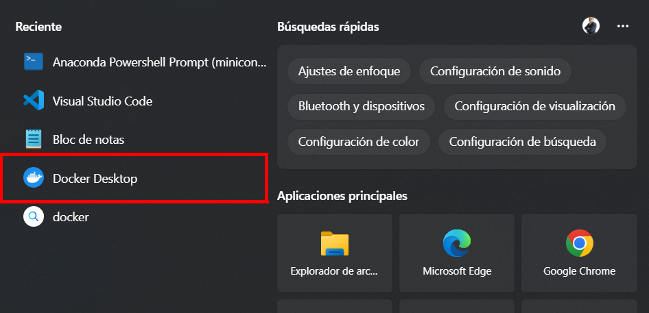
Entra y verifica que el motor principal de Docker (Docker Daemon) está activo y funcionando correctamente.
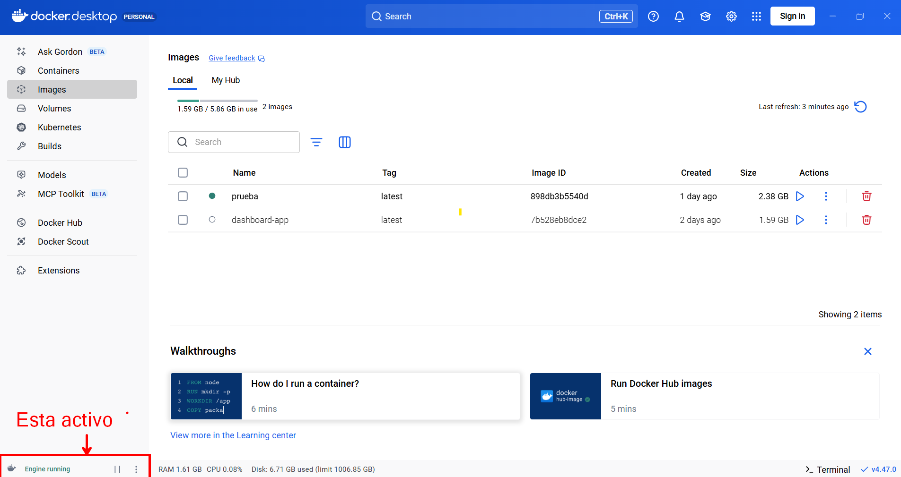
Para crear el
Dockerfile, este debe estar en la carpeta donde esta la estructura del proyecto, este se encuentra en la carpetaapp_dash.
# Imagen base de Python (versión ligera 3.10)
FROM python:3.10-slim
# Establecer el directorio de trabajo dentro del contenedor
WORKDIR /app
# Copiar archivo de dependencias primero (mejora cache de Docker)
COPY requirements.txt requirements.txt
# Instalar dependencias del proyecto
RUN pip install -r requirements.txt
# Copiar el resto del código de la aplicación al contenedor
COPY . .
# Exponer el puerto 8080 para acceder a la aplicación
EXPOSE 8080
# Comando por defecto para ejecutar la aplicación con Gunicorn
# "app:server" significa que en app.py existe un objeto llamado "server"
CMD ["gunicorn", "-b", "0.0.0.0:8080", "app:server"]
Debemos tener en cuenta que el script de
app.py, al fin del codigo vamos a poner esto
server = app.server # Para Google Cloud Run / App Engine
if __name__ == "__main__":
app.run(debug=True, host="0.0.0.0", port=8080)
Este con el fin de poder desplegarlo en la nube.
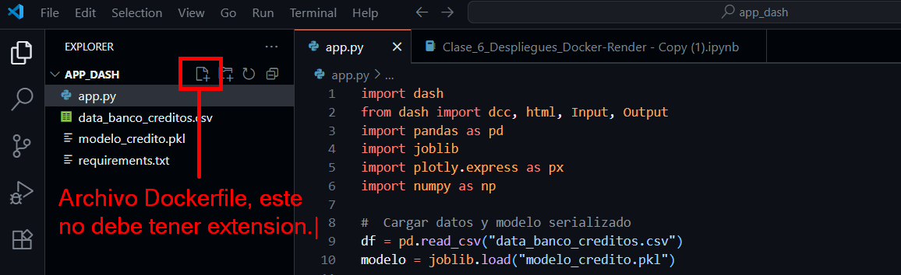
Una observación importante, es que en la carpeta no pueden haber 2 o más archivos docker.
De igual forma crea un archivo que se llame
.gitignore
.env
.vscode
Observación de .gitignore
El archivo .gitignore se usa para decirle a Git qué archivos o carpetas no deben ser rastreados ni subidos al repositorio.
La configuración que me muestras sirve para evitar que se guarde “basura” o archivos sensibles. Te explico cada línea:
__pycache__/: ignora las carpetas donde Python guarda los archivos compilados automáticamente.*.pyc, *.pyo, *.pyd: ignora los archivos binarios/compilados que Python genera. No son necesarios en el repo..env: ignora tu archivo de variables de entorno (contraseñas, tokens, claves API, configuraciones locales). Esto es muy importante por seguridad..vscode: ignora la configuración local de tu editor Visual Studio Code (atajos, extensiones, etc.), que no es relevante para otros desarrolladores.
En resumen: con ese .gitignore te aseguras de que tu repositorio contenga solo tu código y archivos importantes, sin incluir archivos temporales, binarios ni información sensible.
Si seguiste la estructura inicial, continua los pasos en tu terminal**.
Verifica que estes trabajando en tu carpeta en donde tienes guardado losa archivos. Luego desde la terminal, realiza los siguientes pasos
Verifica la version de docker
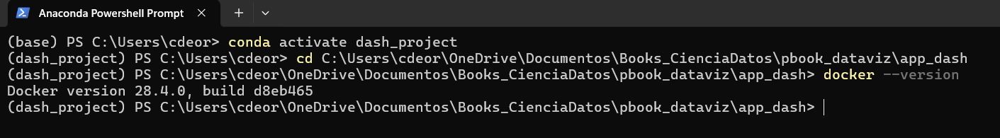
Luego desde la terminal, realiza los siguientes pasos
docker build -t mi-dash .
Comando |
Significado |
|---|---|
|
Le indica a Docker que construya una imagen a partir de un |
|
Usa |
|
Le dice a Docker que use el contexto de construcción en la carpeta actual. |
Este comando creará una imagen local llamada mi-dash que incluirá todo el código, dependencias y configuraciones especificadas en el Dockerfile.
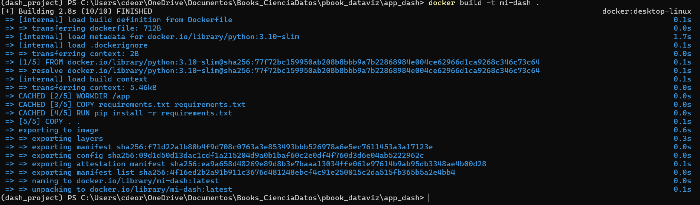
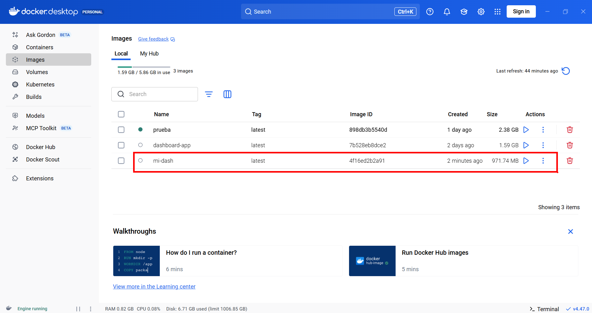
Una vez creada la imagen con
docker build, ejecutamos el contenedor con el siguiente comando:
docker run -p 8080:8080 mi-dash
Comando |
Explicación |
|---|---|
|
Inicia un nuevo contenedor basado en una imagen. |
|
Mapea el puerto 8080 del contenedor al puerto 8080 del host (tu computador), lo cual permite acceder a la app desde el navegador. |
|
Es el nombre de la imagen Docker que construiste previamente. |
Guardar la imagen Docker en local usando la consola de Anaconda Power Shell:
docker save -o mi-dash.tar mi-dash
Levantamiento de un Dashboard en Google Cloud#
El levantamiento de un dashboard en Google Cloud consiste en el conjunto de pasos técnicos y de infraestructura que permiten poner a disposición en la nube una aplicación de visualización de datos (ejemplo: desarrollada en Dash, Flask, Streamlit o Django) para que sea accesible de forma pública o privada a través de internet, con altos niveles de seguridad, escalabilidad y disponibilidad.
1. Proceso General#
Empaquetado de la aplicación
Se utiliza un contenedor Docker que incluye el código, las librerías, dependencias y configuraciones necesarias para ejecutar el dashboard de manera independiente del entorno.
Almacenamiento de la imagen
El contenedor se sube a Artifact Registry, un repositorio seguro en Google Cloud que gestiona y versiona las imágenes Docker.
Despliegue en un servicio gestionado
Existen varias alternativas según el caso:
Cloud Run: servicio serverless que ejecuta contenedores bajo demanda. Escala automáticamente y se cobra únicamente por el uso.
App Engine: plataforma administrada para desplegar aplicaciones web sin preocuparse por la infraestructura.
Compute Engine: máquinas virtuales donde se puede configurar el entorno de ejecución manualmente.
Google Kubernetes Engine (GKE): ideal para entornos de gran escala y orquestación de múltiples contenedores.
2. Beneficios#
Accesibilidad: el dashboard queda disponible mediante una URL pública o privada.
Seguridad: integración con IAM para controlar el acceso y certificados HTTPS automáticos.
Escalabilidad: capacidad de atender desde pocos usuarios hasta miles de conexiones simultáneas.
Eficiencia en costos: en servicios como Cloud Run se paga solo por el tiempo y los recursos usados.
Integración nativa: conexión directa con servicios de datos como:
BigQuery (análisis de grandes volúmenes de datos).
Cloud SQL (bases de datos administradas).
Cloud Storage (almacenamiento de archivos, modelos y CSVs).
Pub/Sub (mensajería y procesamiento en tiempo real).
En resumen, el levantamiento de un dashboard en Google Cloud no es únicamente desplegar una aplicación, sino todo un proceso que abarca:
Empaquetar,
Almacenar,
Desplegar y
Gestionar la aplicación en la nube,
garantizando así que la solución de visualización de datos esté disponible de forma confiable, segura y escalable para los usuarios finales.
Pasos para el levantamiento del Dash#
Debemos crear un nuevo proyecto en google cloud:
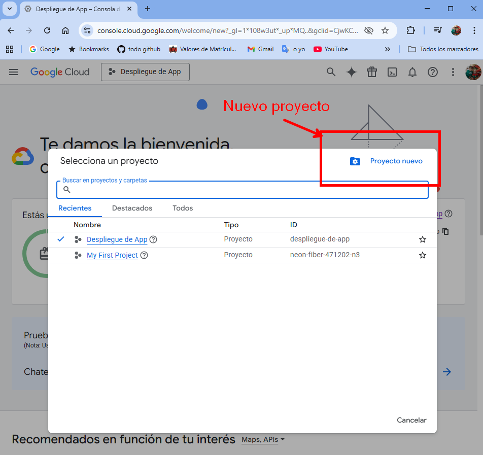
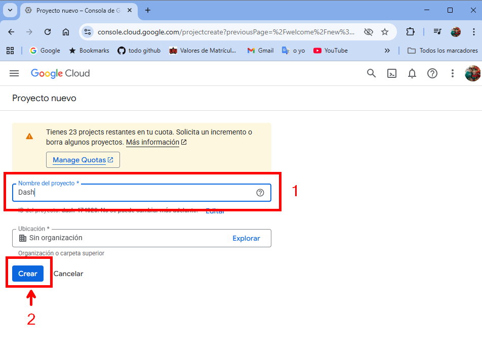
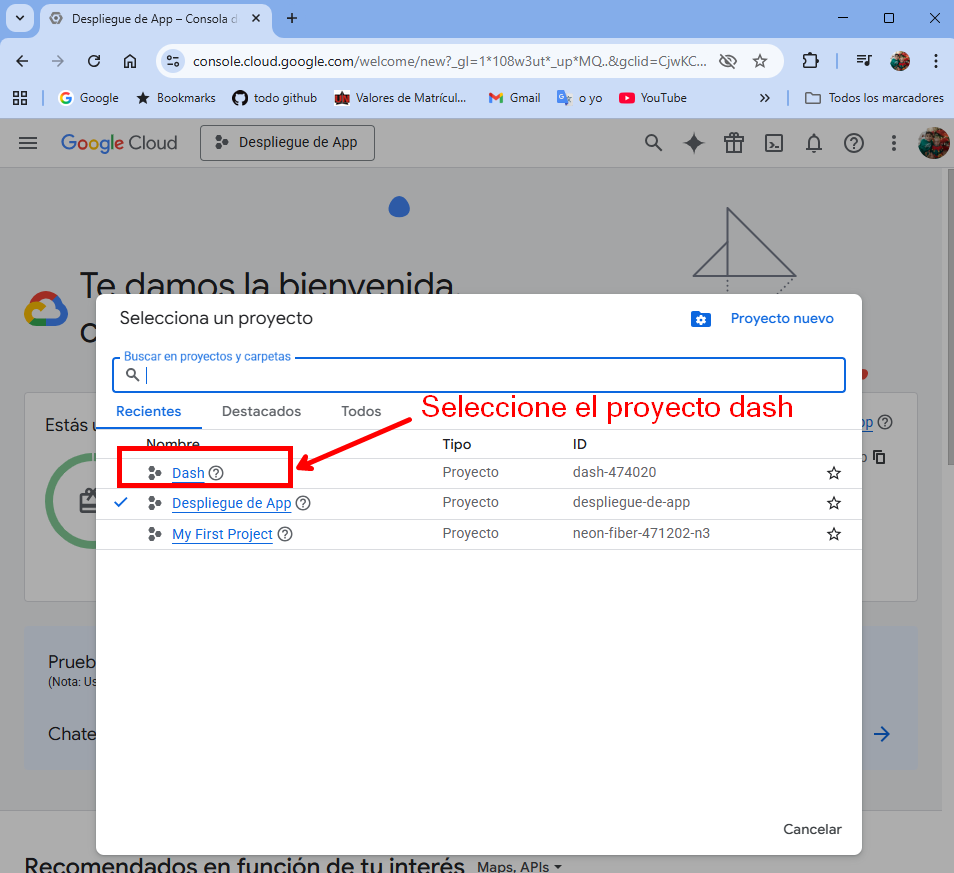
Se deben habilitar las siguientes APIs:
Artifact Registry,Cloud Build API
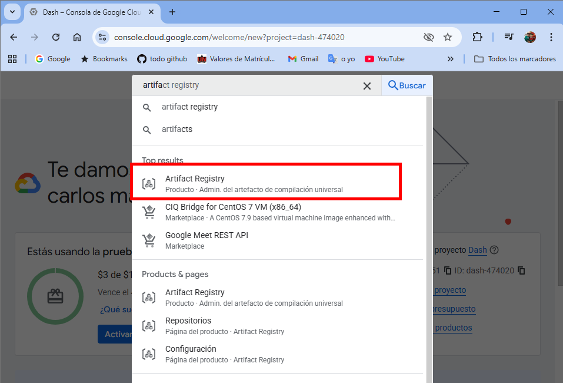
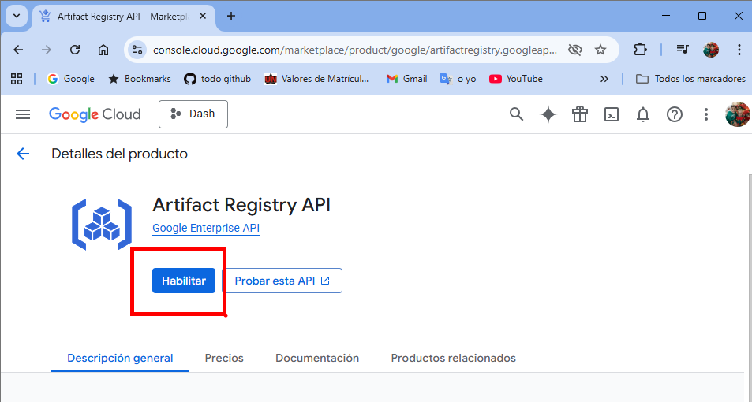
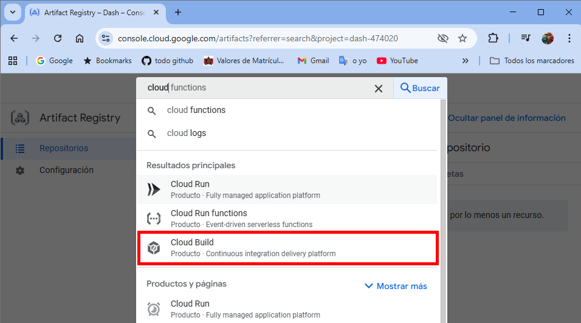
Se debe crear un repositorio en
Artifact Registry
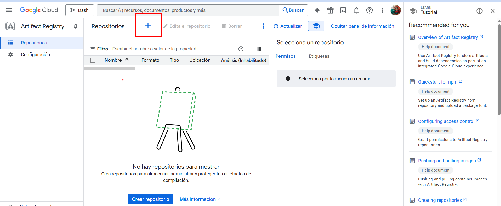
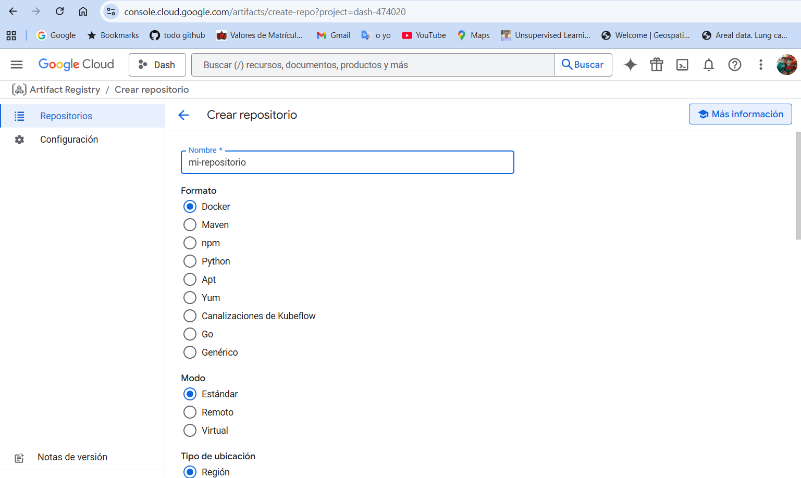
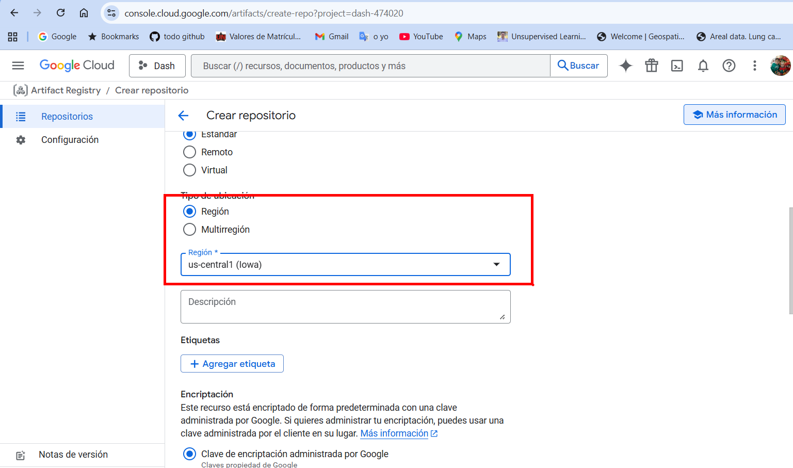
Al final le das crear
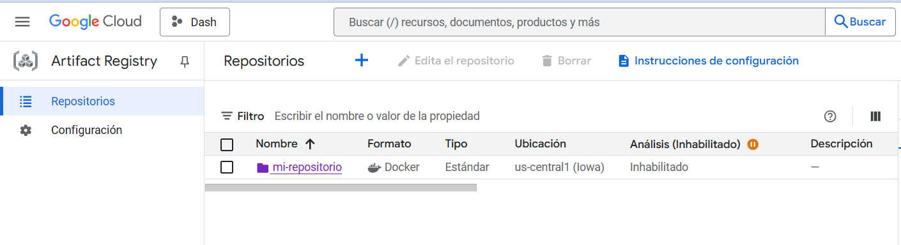
Abrir
Cloud Shellde google cloud
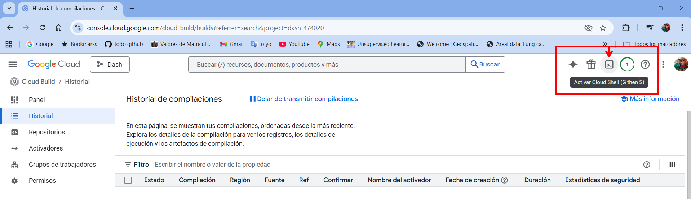
Haz clic en Upload file o Subir archivo. Selecciona tu archivo, por ejemplo
mi-dash.tar. El archivo se va a cargar a tu home enCloud Shell
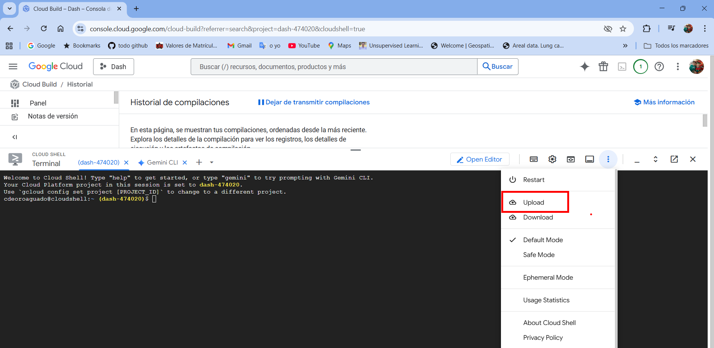
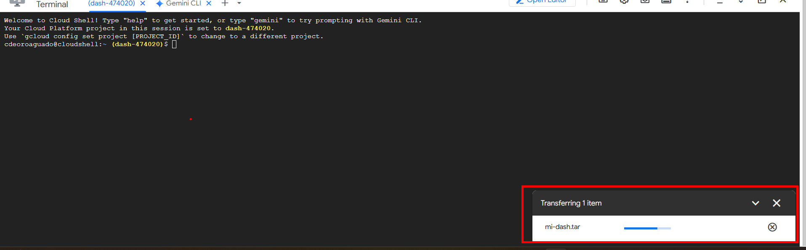
Carga la imagen Docker en Cloud Shell:
docker load < mi-dash.tar
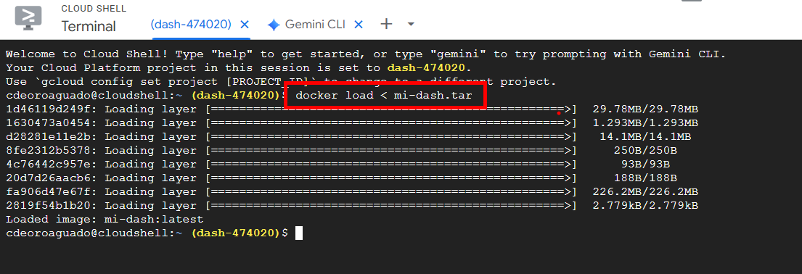
Verifica que está cargada:
docker images
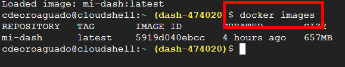
Etiqueta la imagen para
Artifact Registry:docker tag mi-dash:latest us-central1-docker.pkg.dev/dash-474020/mi-repositorio/mi-dash:1.0
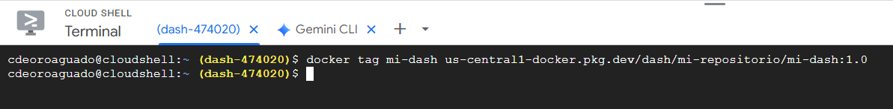
Autentica Docker con Artifact Registry (solo la primera vez):
gcloud auth configure-docker us-central1-docker.pkg.dev
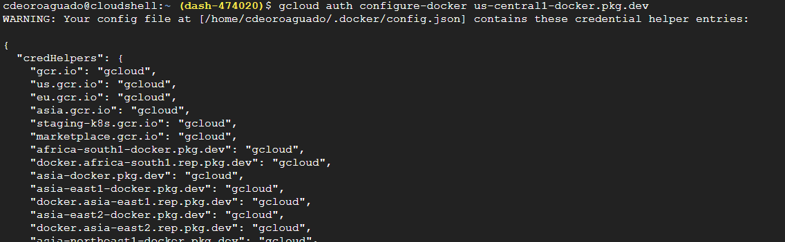
Algunas veces, en tu Cloud Shell, corre este comando para habilitar la API:
gcloud services enable artifactregistry.googleapis.comHaz el push de la imagen:
docker push us-central1-docker.pkg.dev/dash-474020/mi-repositorio/mi-dash:1.0
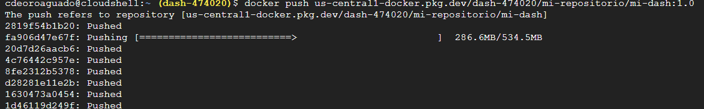
Regresa a la pestaña de
Artifact Registryen el navegador y dale Actualizar, ya deberías ver tu imagen en el repositorio.
Despliegue en Cloud Run (desde la consola web)
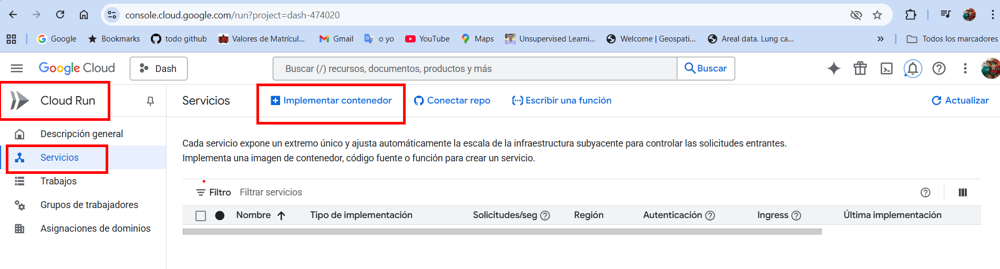
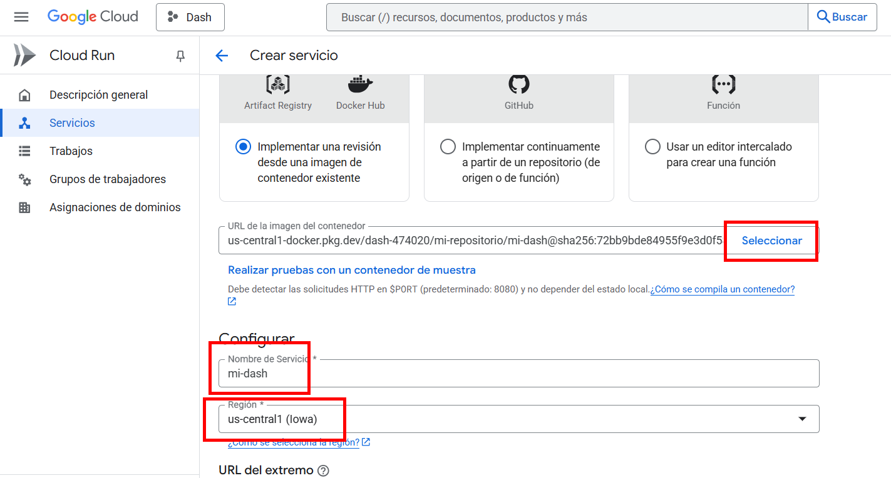
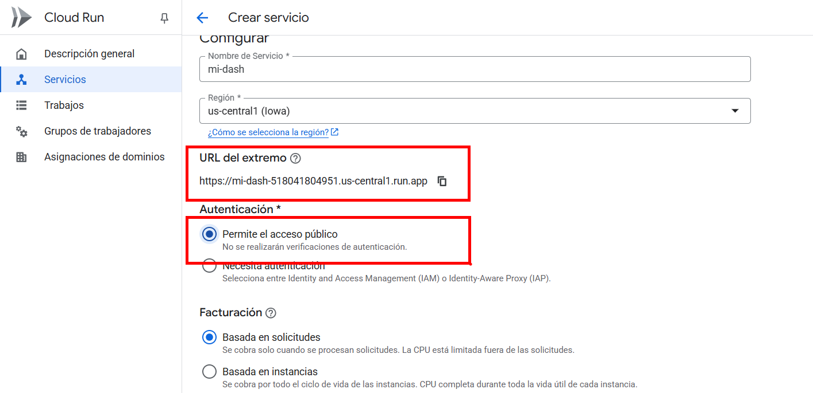
Al final le da crear